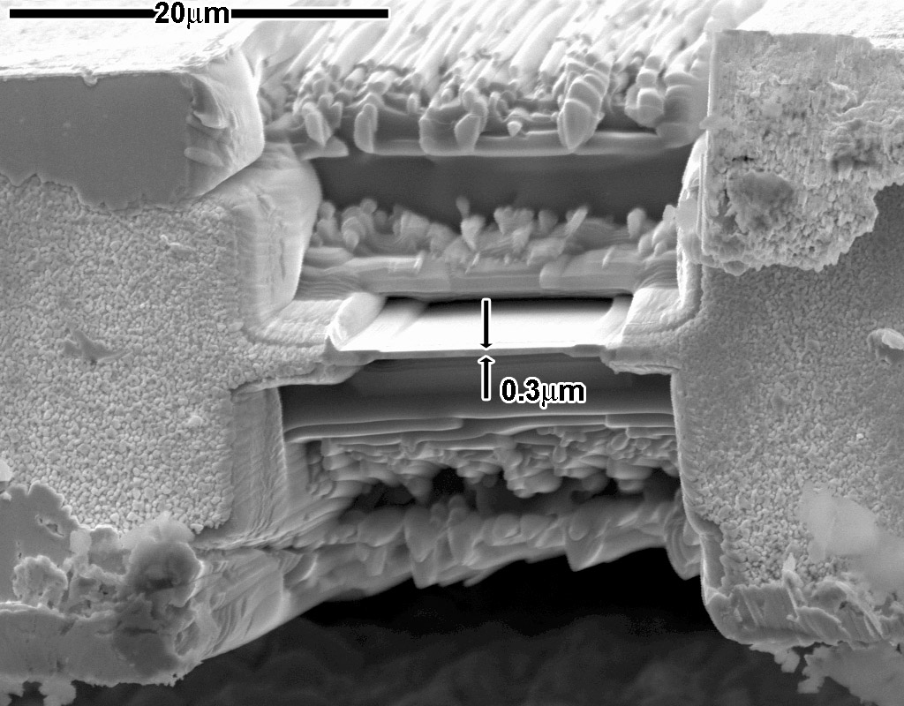
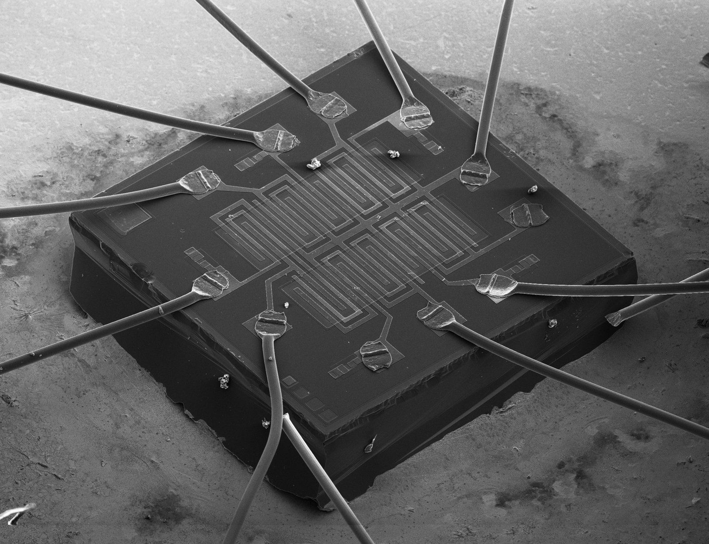
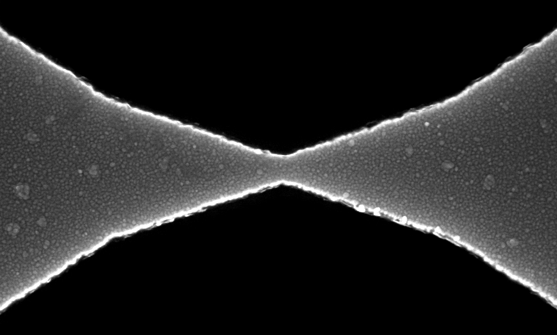
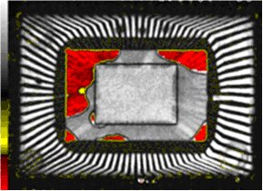
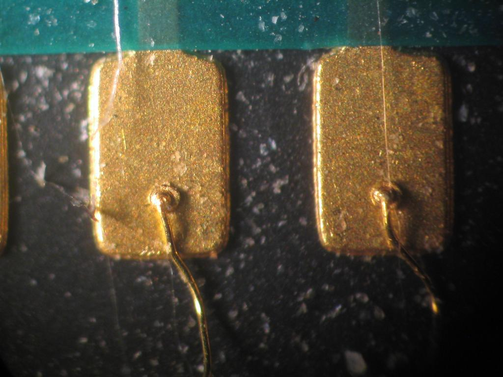
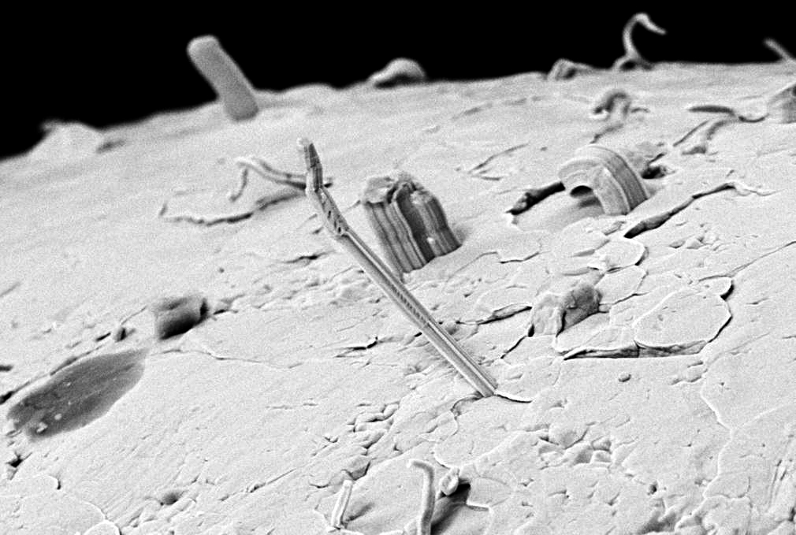
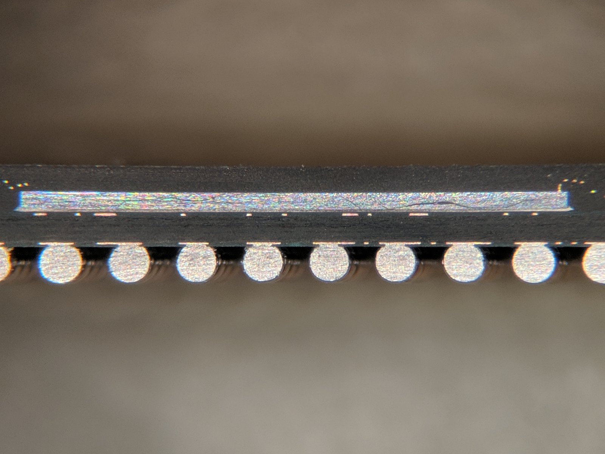

0. 良率改善工程全景圖 (Process Overview) 0. Yield Enhancement Process Overview ▼
現代半導體製程牽涉 500 至 1,500 道繁複步驟。當測試端回報良率下滑時，有超過 40% 的初期良率異常並非來自於純粹的晶圓代工製程微粒缺陷，而是由測試硬體接觸不良（Contact/Probe card/Socket）、測試程式邊限缺陷（Test Program/Timing）、量測系統誤差（Gage R&R）、或矽基板長晶與材料批次擴散變異所誘發的「非製程假異常（Pseudo Yield Loss）」。 Modern semiconductor manufacturing involves between 500 and 1,500 steps. When test yield drops, over 40% of initial yield excursions are NOT caused by raw fab process particle defects, but rather by test hardware contact resistance, probe card/socket wear, test program timing marginality, metrology errors (Gage R&R), or raw substrate/diffusion material variations—creating severe "Pseudo Yield Loss" and excessive overkill.
當 CP 或 FT 良率驟降 10% 時，若未經檢查探針卡接觸阻抗（\(R_c\)）、測試座 Pogo Pin 磨損、測試程式 Strobe 選通時間邊限與 Gage R&R 量測重複性，就貿然通報晶圓廠全面停機洗爐管或更換微影光罩，將造成數百萬美元的產能損失與供應鏈交期延誤！ When sort yield plummets by 10%, halting fab furnaces or changing litho reticles before verifying probe contact resistance (\(R_c\)), socket pogo wear, strobe timing jitter, and Gage R&R will cause millions of dollars in unnecessary factory downtime and delivery delays!
0.2 半導體低良率根因全景因果魚骨圖 (Semiconductor Low-Yield Ishikawa Fishbone Diagram) 0.2 Semiconductor Low-Yield Root Cause Ishikawa Fishbone Taxonomy (6M1E Analysis)
良率異常排查實務中，工程師最常面臨的瓶頸是「問題牽涉站點極廣，各部門（微影、蝕刻、薄膜、擴散、封裝、測試、品保）各執一詞、互相甩鍋」。為建立全方位無死角的根因偵測網，國際頂級晶圓廠與 IDM 均導入經典的 6M1E 半導體專屬因果魚骨分析法（Ishikawa Diagram），將所有潛在缺陷來源解構為六大骨幹：機台（Machine）、材料（Material）、方法（Method）、量測（Measurement）、環境（Environment）、與人員體系（Man）： During yield excursion investigations, engineers often confront cross-departmental finger-pointing between Litho, Etch, Thin Films, Diffusion, Packaging, and Test. To establish a comprehensive, zero-blind-spot diagnostic framework, world-class semiconductor foundries deploy the 6M1E Semiconductor Ishikawa Fishbone Methodology. All potential failure mechanisms and yield drop sources are mapped across six core spines: Machine, Material, Method, Measurement, Environment, and Man (Governance):
| 魚骨維度 (6M1E Dimension)Fishbone Dimension | 典型缺陷與物理根因 (Physical & Electrical Root Causes)Failure Mechanisms & Root Causes | 主要受害站點Vulnerable Stations | 工程診斷工具與即時處方箋 (Action Playbook)Diagnostic Tools & Mitigation |
|---|---|---|---|
| 1. 機台設備 (Machine) Equipment & Chambers |
• 電漿蝕刻機聚焦環（Focus Ring）磨損變薄導致外圈電場發散； • 微影曝光機透鏡熱效應（Lens Heating）引發高階像差與曝光劑量偏移； • 爐管垂直石英舟氣體消耗階度（Gas Depletion Gradient，Slot 1 到 25 膜厚遞減）； • CMP 研磨墊孔隙玻璃化（Pad Glazing）與多區氣囊壓力失衡。 • Etcher focus ring erosion flaring edge plasma fields; • Scanner lens heating inducing wavefront aberrations and dose drift; • Vertical furnace axial gas depletion creating wafer-to-wafer film tapering; • CMP pad glazing and multi-zone bladder pressure drift. |
Etch, Litho, Furnace, CMP | FDC 高頻感測器監控（RF 反射功率、節流閥角度）、Chamber 共模卡方分析、APC 閉環補償。 FDC high-speed telemetry, chamber commonality Chi-Square, APC closed-loop compensation. |
| 2. 原材耗材 (Material) Raw Material & Chemicals |
• CZ 矽晶棒拉晶軸向偏析：間隙氧（(O_i)）與電阻率梯度； • 外延層（Epitaxial）厚度微差與晶格滑移線（Slip Lines）； • 光阻感光度批次公差（(pm 2% Delta E_0)）與開封後溶劑揮發 Aging； • CMP 研磨液膠體酸化團聚引致微刮傷（Micro-scratches）； • 封裝模塑料（EMC）固化高收縮應力誘發壓阻漂移（Post-Mold Shift）。 • Czochralski ingot axial dopant and interstitial oxygen ((O_i)) segregation; • Epitaxial thickness drift and crystallographic slip lines; • Photoresist batch photospeed tolerance ((Delta E_0)) and bottle aging; • Slurry colloidal agglomeration causing micro-scratches; • High-shrinkage EMC curing stress triggering piezoresistive shift. |
Substrate, Litho, CMP, Packaging | 原材料批號追溯分層分析、FTIR 氧含量複驗、微孔漿液過濾網定期更換。 Raw material lot stratification, FTIR oxygen validation, sub-micron slurry filtration swaps. |
| 3. 製程方法 (Method) Process & Recipes |
• 光學近接效應校正（OPC）殘餘模型誤差與禁制節距（Forbidden Pitch）； • 先進製程控制（APC）EWMA 權重過大引發控制器超調振盪； • 濕洗保養後冷腔（Cold Chamber）未跑充足 Dummy Seasoning 即生產； • 閘極氧化層前環境暴露等待超期（Q-Time Violation）致天然氧化層微雜質； • 覆晶 Corner DNP 凸塊熱剪切應力撕裂極脆超低介電層（ULK White Bump）。 • Optical Proximity Correction (OPC) residuals and forbidden pitch margins; • APC EWMA over-weighting inducing controller oscillation; • Cold chamber lack of dummy seasoning lots (drifting into SS corner); • Pre-gate clean Q-time expiration inducing interfacial contamination; • Corner DNP flip-chip bump shear stress tearing fragile Ultra Low-k (ULK). |
OPC/DFM, APC, Clean/Gate, Packaging CPI | 嚴格 Q-Time 逾期自動鎖批警報、強制 Seasoning 規範、Corner 增加 Dummy Bumps 緩衝。 Automated Q-time lot hold interlocks, mandatory seasoning protocols, corner dummy relief bumps. |
| 4. 量測測試 (Measurement) Metrology & ATE Systems |
• 量測系統重複性與再現性超規（(%GRR > 30%)）； • 4 線式 Kelvin Sense 斷線退化為 2 線，電纜阻抗計入晶片被誤判為超標； • 探針卡針尖氧化物（(WO_x)）堆積致接觸阻抗 (R_c) 飆升； • 測試座 Pogo Pin 彈簧疲勞（下壓力 < 25g）與 Crown 槽口積錫短路； • 測試程式選通頻閃（Strobe Timing Window）貼近跳變沿引發假時序違規； • 多 DUT 平行測試高功耗向量電源瞬態塌陷（IR Rail Droop）。 • Metrology system gage repeatability & reproducibility ((%GRR > 30%)); • 4-wire Kelvin sense line open degrading to 2-wire false resistance; • Probe card needle tip tungsten oxide buildup spiking contact resistance (R_c); • Socket Pogo pin spring fatigue and crown solder debris bridging; • Program strobe comparator timing placement too close to transition edges; • Multi-DUT simultaneous vector burst inducing supply rail IR droop. |
WAT / PCM, CP Wafer Sort, FT Final Test | 針卡自動研磨清潔（Sand Sheet）、Pogo Socket 計數器換新、Kelvin Loopback 自檢、2D Shmoo 頻閃校正。 Automated probe abrasive cleaning, socket touchdown limits, Kelvin loopback checks, 2D Shmoo timing margins. |
| 5. 環境廠務 (Environment) Facility & Cleanroom |
• 氣態分子污染物（Airborne Molecular Contamination, AMC: 揮發有機物、空氣胺鹽）； • 廠務超純水（UPW）總有機碳（TOC）超標或電阻率下滑； • 無塵室相對濕度驟降引發人體與機台靜電放電（ESD 擊穿閘極）； • 廠房地基低頻微振動引發微影步進機光學重疊誤差（Overlay Drift）； • 機台冷卻水迴路溫度波動（(Delta T > 0.1^circ ext{C})）干擾腔壁熱平衡。 • Airborne Molecular Contamination (AMC: organic VOCs, airborne amines); • Ultra-Pure Water (UPW) TOC spike or resistivity drop; • Cleanroom relative humidity drop triggering electrostatic discharge (ESD); • Facility micro-vibrations degrading lithography scanner overlay accuracy; • Process cooling water loop temperature swings disrupting chamber wall thermal balance. |
Cleanroom, Facilities, Litho Scanners | FOUP 化學濾網（Chemical Filter）、離子風槍防靜電監控、基座氣壓避震器主動補償。 FOUP chemical filtration, ionizer blower static controls, active pneumatic seismic isolators. |
| 6. 人員體系 (Man/SOP) Operations & Governance |
• 人工搬送晶圓盒（FOUP）碰撞振動造成晶圓背裂或邊緣微崩裂（Chipping）； • 機台配方版本（Recipe Revision）未授權手動微調偏移； • 重測政策（Retest Policy）過度放寬，將邊界死晶盲目重測為良品，流出至客戶端； • 惡鄰晶粒效應（GDBN）未自動剔除，使隱性缺陷晶粒漏測逃逸； • 封測代工廠（OSAT）轉廠機台基線（Tool Matching）未依規範對齊。 • Manual FOUP handling shock inducing edge chipping and backside scratches; • Unauthorized manual recipe parameter overrides; • Excessive retest policy abuse converting marginal bad dies to false passes; • Good Die in Bad Neighborhood (GDBN) spatial filtering disabled, causing RMA escapes; • OSAT assembly transfer tool matching specifications violated. |
Operations, Quality Assurance, RMA Closed-Loop | AMHS 自動物料搬送系統、MES Recipe 數位簽章鎖定、強制 GDBN 動態鄰域扣留協議。 AMHS automated material handling, MES recipe cryptographic locking, mandatory GDBN spatial hold protocols. |
0.3 半導體十大核心良率失效模式審查與雙向閉環前饋 / 反饋控制矩陣 0.3 Top 10 Semiconductor Yield Fallouts Deep Review & Bidirectional Feedforward / Feedback Control Matrix
R2R APC & Adaptive Quality現代先進製程良率工程已由單純的「事後失效分析（Post-Mortem RCA）」全面轉向跨工序雙向閉環工程控制（Bidirectional Cross-Stage Closed-Loop Control）。 當特定缺陷或電氣失效在下游（如 Wafer Sort、封裝組裝或 ATE 終測）發生時，工程體系必須同時執行兩大核心控制流： (1) 逆向溯源修正（Feedback to Previous Stage）：將失控參數即時反饋至上游製造機台，透過 Run-to-Run (R2R) 進階製程控制（APC）動態微調配方、鎖定機台 SPC 或觸發 PM，從源頭消除缺陷； (2) 前向主動補償（Feedforward to Next Stage）：將上游量測之殘餘物理變異（如膜厚拓撲、WAT 參數、晶粒邊緣空間特徵）前饋傳遞至下游製程或測試站點，啟動自適應電壓調節（AVS）、微調封裝點膠參數或動態加強篩選，化解潛在報廢； (3) 下游數據前饋重工挽救（Feedforward to Rework Stations）：針對特定可逆工序（如光阻顯影後 ADI 散焦、封膠前 NSOP 虛焊、探針接觸阻抗漂移過殺），將失效座標前饋至指定重工設備，直接挽回良率損失！ Advanced yield engineering has evolved from passive post-mortem failure analysis into Bidirectional Cross-Stage Closed-Loop Control. When a yield fallout or electrical deviation is detected at downstream nodes (Wafer Sort, Packaging, or ATE Final Test), two synchronized control vectors must engage: (1) Feedback to Previous Stages: Transmit fallout signatures upstream to execute Run-to-Run (R2R) Advanced Process Control (APC), interlock SPC drifts, or trigger equipment PM; (2) Feedforward to Next Stages: Relay upstream in-situ metrology signatures (topography, PCM Vth, wafer edge coordinates) downstream to trigger Adaptive Voltage Scaling (AVS), adjust dispensing trajectories, or enforce dynamic screening to salvage marginal dies; (3) Feedforward Rework Salvage: For reversible processing stages (e.g., ADI photoresist rework, pre-mold wire rebonding, controlled clean retest), route fallout dies to precision rework cells to recover gross yield loss!
| # | 核心失效模式 (Fallout)Fallout Mode | 檢出站點Detection Stage | 逆向溯源修正 (Feedback to Previous Stage) Feedback to Upstream Stage | 前向主動補償 (Feedforward to Next Stage) Feedforward to Downstream Stage | 重工救回可行性Rework / Salvage |
|---|---|---|---|---|---|
| 1 | Gate Oxide Breakdown & TDDB 閘極氧化層擊穿與超額漏電 |
Wafer Sort (CP) / FT Idde | 回饋 Fab FEOL：微調電漿去膠偏壓、限制 Antenna 比率；強化熱氧化爐微污染監測（Qox, Dit）。 | 前饋 ATE FT：傳遞漏電晶圓座標圖，啟動自適應 Idde 動態限額；引導至加長型高溫動態 Burn-In。 | 晶圓無物理重工；前饋至 eFuse 啟動逆向基極偏壓（RBB）補償。 |
| 2 | BEOL Metal Bridging & CMP Puddling 金屬走線短路與銅研磨殘留 |
Inline Defect Scan / Sort | 回饋 CMP & Plating：微調研磨墊多區壓力、優化 Slurry 選擇比；裝設渦電流 EPD 杜絕過拋。 | 前饋 Litho Scanner：前饋殘餘膜厚拓撲高度圖，動態執行 Run-to-Run 焦平面自動水平補償。 | 微影後未塗保護層前，前饋缺陷座標至飛秒雷射修補機切除金屬橋接。 |
| 3 | Lithography Defocus & Via Open 微影散焦、線寬細頸與接觸孔開路 |
Inline CD-SEM & ATE | 回饋微影曝光機：即時校準吸盤溫控平坦度矩陣；啟動光罩保護膜（Pellicle）自動雷射除塵。 | 前饋乾蝕刻機 (RIE)：將量測 Delta CD 前饋至蝕刻機微調時間與氣體偏壓（Etch Bias Feedforward）。 | 100% 顯影後重工 (ADI Rework)：在未蝕刻前直接退回去光阻並重新曝光塗佈！ |
| 4 | Process Corner Skew (FF/SS/FS/SF) 製程角落漂移與批次間變異 |
WAT/PCM & Sort Fmax | 回饋離子植入/退火：校正法拉第杯束流計；檢驗 RTA 熱電偶老化，鎖定漂移機台。 | 前饋 ATE 終測機：前饋精準 Vth 數據啟動自適應電壓調整（AVS eFuse），動態補償核心電壓降。 | 退火前劑量不足可追加修補植入；成型晶粒透過內部可程式 DAC 暫存器軟體校準。 |
| 5 | Part Average Testing (PAT) Maverick 常態分佈離群值 (車規潛在早夭) |
Sort & FT Parametric | 回饋晶圓缺陷檢驗：將離群座標疊加於 Klarf 資料庫，交叉排查邊緣晶格滑移線與熱場畸變。 | 前饋封裝與可靠度：啟動動態 PAT 與 GDBN 壞鄰居剔除；強制周邊晶粒延長 HTOL 燒機壽命測試。 | 車規產品嚴禁出貨；前饋降級（Downgrade Routing）轉為消費級或工業級次檔應用。 |
| 6 | Chip-Package Interaction (CPI) 晶片-封裝應力與超低介電層開裂 |
Package Qual (HAST) & FT | 回饋 Fab BEOL：增厚頂層鈍化層（Polyimide Buffer）膜厚；優化 UBM 結合力與微凸塊共面度。 | 前饋封裝點膠機：前饋晶圓薄化厚度與翹曲度量測矩陣，動態調整底部填膠點膠溫度與路徑。 | 填膠硬化前若貼片偏差，可前饋至熱風解銲重工站（Hot-Gas Desolder）重新植球貼片。 |
| 7 | Wirebond NSOP & Wire Sweep Short 打線未著銲墊與高黏度模流沖線 |
Assembly AOI / X-Ray / FT | 回饋電漿清洗與打線機：延長 Ar/O2 電漿除碳時間；重新微調超音波功率與打線弧形強度。 | 前饋模壓封膠機：前饋金線弧高與長度至模壓機，動態限制 EMC 環氧樹脂前段射出流速（Sweep<3%）。 | 封膠前 3D AOI 檢出未著線晶粒，前饋退回打線機在預備墊實施安全二次補打線！ |
| 8 | Underfill Voiding & Solder Fatigue 覆晶填膠空洞與銲點熱循環斷裂 |
C-SAM & FT Thermal Cycle | 回饋真空迴銲爐：導入液相線真空抽除微氣泡（Void<1%）；優化超音波去離子水清洗去除殘留。 | 前饋 ATE 測試站：前饋超音波掃描氣泡座標，在對應引腳啟動四線式克爾文微阻抗測試。 | 樹脂完全固化前，可前饋至高壓滅菌釜（Autoclave / 6 bar N2）進行高壓消泡二次重烤。 |
| 9 | ATE Rc Drift & Socket Pin Wear 測試探針接觸阻抗漂移與假性過殺 |
ATE Final Test Multi-Site | 回饋測試機維護：插拔次數達標（15k 次）自動觸發砂紙研磨針尖清潔行程；警示更換老化彈簧針。 | 前饋自適應複測控制器：多站失效計數器即時前饋，自動隔離故障座，啟動受控乾淨複測。 | 85% 以上過殺直接救回：探針清潔後自動將暫存托盤晶片實施受控二次複測，挽回巨額良率！ |
| 10 | High-Speed SerDes Eye Margin Fallouts 高速介面眼圖與高低溫時序邊界失效 |
FT & SLT (-40C / +125C) | 回饋晶片設計與晶圓廠：傳遞時序違規路徑微調時脈樹緩衝器；反饋晶圓廠對齊 NMOS/PMOS 速度中心。 | 前饋系統測試 (SLT)：傳遞眼圖抖動數據至 SLT 測試機，動態校準韌體 CTLE/FFE/DFE 等化器暫存器。 | 透過二級燒錄站前饋調整晶片內部 PLL 倍頻偏壓與 ODT 晶片內終端電阻，使時序邊限完全達標。 |
0.4 跨工序分站審查：五大製造階段各站 Top 10 失效模式、物理根因與逆向推回溯源矩陣 0.4 Stage-by-Stage Top 10 Fallouts Review: Physics of Failure (PoF) & Push-Back to Earlier Stages
50 Master Failure Mechanisms為落實製造生命週期的全面品質防禦，工程團隊不能僅在最後測試階段被動承受報廢。本節針對半導體晶片製造的五大核心工序站點（晶圓前段製造 FEOL、後段導線與凸塊 BEOL/WLP、晶圓針測 Sort/WAT、封裝組裝 Packaging、終測與可靠度驗證 FT/Qual），各精選出排名前 10 大最關鍵良率失效模式（共計 50 項核心失效）。 對每一項失效進行失效物理學（Physics of Failure, PoF）深入根因剖析，並具體制定如何逆向推回（Push Back）至更早期的工序節點執行源頭攔截、SPC 防呆扣留與設備配方修正，徹底實現「源頭工程防禦」！ To establish comprehensive quality containment across the silicon manufacturing lifecycle, engineering teams cannot passively absorb fallout at final test. This section dissects the 5 Core Manufacturing Stages (Fab FEOL, Fab BEOL & WLP, Wafer Sort & WAT, Packaging & Assembly, and Final Test & Qual), profiling the Top 10 most critical fallouts per stage (50 master mechanisms total). Each mechanism details its Physics of Failure (PoF) root cause and actionable protocols to Push Back upstream to earlier processing steps for containment, SPC interlocks, and recipe centerings.
涵蓋矽基板、淺溝槽隔離 (STI)、阱區植入、閘極堆疊 (HKMG)、源極/汲極 (S/D) 與矽化物工程
| # | 失效模式 (Fallout Mechanism) | 檢測站點與特徵 | 物理根因剖析 (Physics of Failure, PoF) | 逆向推回早期工序之溯源點與管控動作 (Push-Back) | 關鍵 SPC 監控指標 |
|---|---|---|---|---|---|
| 1 | 閘極氧化層微孔洞與 TDDB 擊穿 Gate Dielectric Breakdown |
WAT 氧化層擊穿電壓 (Vbd) & 漏電 | 閘極氧化前濕式清洗殘留微量金屬雜質（Fe, Cu）或微粒，引發局部電場集中與高溫經時擊穿。 | 推回：晶圓清洗 RCA/SC-1 站與原材料 強化 HF 去氧化層與 SC-1 巨觀微粒過濾（微濾膜孔徑 < 10nm）；加強原始磊晶晶圓表面顆粒檢驗（SP5 顆粒數 < 15 顆/片）。 |
Qox > 12 C/cm2, Dit < 1e10 eV-1cm-2 |
| 2 | 接面超額漏電與晶格殘留位錯 Junction Leakage (EOR Loops) |
WAT P-N 接面反向偏壓漏電流 (Ijunc) | 重離子源極/汲極植入後，非晶化界面端（End-of-Range, EOR）殘留填隙原子團聚成差排環，形成中能隙復合陷阱。 | 推回：離子植入機 (Implant) 與高溫退火 (RTA) 提高快速熱退火峰值溫度至 1050°C 並延長平坦保溫時間促使差排湮滅；優化植入機光束能量分布抑制晶格深層破壞。 |
Ijunc < 0.5 pA/um2 at 1.2V |
| 3 | 短通道效應與臨界電壓滾降 Vth Roll-off & Short Channel Effect |
WAT 短通道饱和電流 (Idsat) 與 Vth | 暈輪植入（Halo/Pocket Implant）傾角偏移或高厚光阻陰影效應，導致通道兩側摻雜不對稱，汲極引致能障降低（DIBL）。 | 推回：暈輪離子植入機與微影光阻站 校準離子機旋轉傾斜晶圓吸盤（Tilt/Twist Angle ±0.1°）；在微影站減薄暈輪光阻膜厚並優化側壁陡直度，消除陰影遮蔽。 |
DIBL < 65 mV/V, Vth Roll-off < 40mV |
| 4 | 淺溝槽邊角寄生漏電 (STI Divot) STI Corner Subthreshold Hump |
Id-Vg 曲線次臨界區隆起 (Hump) | 墊氧化層剝離（Hot H3PO4）過蝕刻，導致 STI 氧化物在矽邊角下陷（Divot），閘極覆蓋時在銳角形成尖端寄生導通。 | 推回：STI CMP 研磨與墊層氮化矽濕蝕刻站 嚴格控制熱磷酸濕蝕刻時間與槽液濃度比，導入邊角預圓化氧化（Corner Rounding Oxidation）將矽邊角倒角半徑加大至 > 10nm。 |
Divot 深度 < 8nm, 次臨界擺幅 SS < 70 mV/dec |
| 5 | 矽化物尖峰刺穿接面 (Silicide Spiking) NiSi / CoSi2 Junction Puncturing |
WAT 接面軟擊穿 (Soft Breakdown) | 鎳/鈷金屬沉積不均或一階段退火熱失控，使金屬沿晶界加速異常擴散刺穿超淺接面（USJ）。 | 推回：金屬沉積 PVD 與二階段活化爐 (RTP) 微調預濺鍍清潔（Pre-sputter Ar RF Clean）均勻性；嚴格實施二階段低溫形成-剝離未反應金屬-高溫相變退火溫度窗口。 |
接面漏電突波率 < 0.05%, Rs 均勻度 < 2.5% |
| 6 | 電漿充電損傷 (PID / Antenna Effect) Plasma Induced Damage |
薄閘極介電層電容 C-V 曲線頻率色散 | 複晶矽與金屬乾蝕刻時電漿非均勻電位差，使大面積天線導線收集電荷經極薄氧化層放電擊穿。 | 推回：乾蝕刻機 (Etcher) 與 IC 版圖設計 DRC 蝕刻機加裝高頻電漿自動平衡阻抗匹配器，消除晶圓表面電位梯度；在設計端強制插入天線二極體（Antenna Diode）保護開關。 |
天線比 (Antenna Ratio) < 250:1, Vbd 漂移 < 3% |
| 7 | 井區穿通與閂鎖效應 (Latch-up) Well-to-Well Punchthrough & Latch-up |
WAT 閂鎖觸發電流 (I-trigger) | 高能 MeV 倒退阱（Retrograde Well）植入劑量偏低或能量不足，基底寄生雙極性電晶體（BJT）增益過高。 | 推回：高能量離子植入機 (MeV Implanter) 核對植入機能量倍增加速腔高壓校準；提高基底磊晶層摻雜濃度以降低基板電阻（Rsub），提升閂鎖觸發閥值。 |
I-trigger > 350mA, V-hold > 1.5x Vdd |
| 8 | 晶圓高溫滑移線與熱翹曲 (Slip Lines) Thermal Stress Induced Slip Lines |
光學暗場全晶圓掃描 (Slip Lines) | 立式高溫氧化/擴散爐降溫降溫斜率過快（>10°C/min），晶圓邊緣與中心極大熱梯度引發晶格剪切滑移。 | 推回：高溫擴散氧化爐 (Furnace) 平緩化爐管降溫曲線（升降溫速度限制在 3~5°C/min）；優化晶圓碳化矽支撐舟（SiC Boat）接觸點結構分散接觸應力。 |
滑移線長度 = 0mm (邊緣 3mm 內免驗除外) |
| 9 | 鰭片彎曲與線寬波動 (Fin Bending) FinFET / GAA Fin CD Collapse |
CD-SEM / 傾斜掃描電子顯微鏡 (T-SEM) | 自對準多重曝光（SAQP）間隔層應力失衡，或溝槽填充氧化物沉積硬化時體積收縮牽引鰭片倒塌。 | 推回：間隔層沉積 ALD 與淺溝槽流動化 CVD (FCVD) 微調 ALD 沉積薄膜殘留應力至中性（< 50 MPa）；調降 FCVD 水解硬化蒸氣溫度斜率，避免局部收縮應力剪切鰭片。 |
Fin Height 變異 < 0.8nm, Fin 傾斜角 > 88.5° |
| 10 | 熱載子射入退化 (HCI Degradation) Hot Carrier Injection Wear-out |
加速電氣壽命測試 (100 hrs stress @ 1.3V) | 汲極端夾止區橫向高電場加速熱電子撞擊介面產生陷阱，造成電晶體跨導（Gm）隨時間衰減與 Vth 漂移。 | 推回：輕摻雜汲極 (LDD) 離子植入與間隔層 LPCVD 微調 LDD 植入雜質濃度梯度降低接面峰值橫向電場；低溫沉積含氫量極低之氮化矽間隔層，減少介面態缺陷。 |
Gm 衰減率 < 5% after 100k sec Stress |
🛠️ 5 大內建互動分析工具 (Interactive Engineering Suite) 🛠️ 5 Interactive Yield Engineering Analyzers ▼
缺陷密度與良率模型計算機 Defect Density & Yield Modeling Calculator
晶圓空間缺陷簽名模擬器與根因排查 Wafer Map Spatial Pattern Simulator & Root Cause Prescriber
推薦排查機台：CMP Platen #2 研磨墊壓力曲線、Coater Edge Bead Removal 噴嘴角度、Etch Focus Ring 消耗程度。
首要處方：調校邊緣多區壓頭（Multi-zone Carrier Head）壓力參數，檢查退火爐氣流密封。
非製程假異常根因排查決策矩陣 (Root Cause Triangulator) Root Cause Triangulator: Hardware / Program / Metrology / Material
良率工程的經典痛點是「假異常誤導真因排查」。本工具內建專家規則庫，依據測試現場所觀察到的具體症狀，即時演算 5 大潛在根因類別的概率分佈，並輸出標準驗證實驗程序（SOP）。 A classic pain point in yield enhancement is pseudo yield fallout misleading engineering investigation. This engine evaluates observational symptoms to calculate Bayesian probability across 5 root-cause domains and prescribes validation experiments.
黃金驗證 SOP（3 步驟）：
1. Site Swap 驗證：將 DUT 晶片旋轉 180° 或交換測試槽位，確認 Fail 是否隨 Site 轉移。
2. Scrub Mark 光學檢驗：以顯微鏡檢驗晶片鋁墊針印深度（要求 20–35% pad 深度）與中心偏位。
3. 執行針卡研磨清潔（Sand Sheet Cleaning）：30 次 Overdrive 研磨後重測。
機台 / 腔體共模相關性檢定工具 Tool & Chamber Commonality Analyzer (Chi-Square & ANOVA)
當某道關鍵製程（如 Metal 1 RIE Etcher）擁有 4 個平行反應腔體（Chamber A/B/C/D）時，透過卡方獨立性檢定（\(\chi^2\) Test）快速揪出統計上顯著的「流氓腔體（Rogue Chamber）」，避免盲目全廠換料停機。 When a critical process step utilizes parallel reaction chambers (Chamber A/B/C/D), this tool applies a Chi-Square test of independence to pinpoint the statistically significant "Rogue Chamber", preventing unnecessary fab-wide equipment halts.
| Chamber | 抽測晶圓數 (Wafers)Wafers Tested | 測試總晶粒 (Total Dies)Total Dies | 失效晶粒 (Failed Dies)Failed Dies | 失效率 (Fail Rate)Fail Rate | 勝算比 (Odds Ratio)Odds Ratio | 統計異常評級Statistical Status |
|---|---|---|---|---|---|---|
| Chamber A (PM-01) | 25 | 13,100 | 3.02% | 0.98 | Normal (基準內) | |
| Chamber B (PM-02) | 24 | 12,576 | 3.04% | 0.99 | Normal (基準內) | |
| Chamber C (PM-03) ⚠️ | 26 | 13,624 | 8.44% | 2.94 | 🚨 Rogue Chamber! | |
| Chamber D (PM-04) | 25 | 13,100 | 3.09% | 1.01 | Normal (基準內) |
參數型良率與 Cpk / PAT 臨界邊界分析器 Parametric Margin, Cpk & Dynamic PAT Analyzer
Phase 0: 良率基線與損失解構 (Baseline & Loss Decomposition) Phase 0: Baseline Setting & Yield Loss Decomposition ▼
進行任何良率改善前，第一步必須對「良率（Yield）」進行嚴謹的層級解構。混淆「線良率」與「晶粒良率」，或將「功能性失效」與「參數型飄移」混為一談，是良率專案最致命的方向性錯誤。 Before initiating yield enhancement, the first mandatory step is rigorous loss decomposition. Confusing Line Yield with Die Yield, or lumping Functional Fails with Parametric Drift, will misdirect the entire engineering campaign.
0.1 線良率 (Line Yield) 與 晶粒良率 (Die Yield) 0.1 Line Yield (FAB Out/In) vs. Die Yield (Sort/CP)
整體晶圓廠最終產出良率由兩大乘數構成： Overall fab shipment yield is the product of two distinct components:
- Line Yield (\(Y_{line}\))： 晶圓製造過程中的完整性比例。損失主因為晶圓破片（Wafer Breakage）、機台刮傷（Robot Scratches）、化學槽沾污報廢（Scrap）、製程參數重大出界整批作廢。成熟晶圓廠目標通常 \(\ge 98.5\%\)。 Wafer integrity during processing. Losses stem from breakage, robotic handler scratches, bath contamination, and catastrophic excursions. Target is typically \(\ge 98.5\%\).
- Die Yield (\(Y_{die}\))： 在完工晶圓上，電性與功能測試通過的良好晶粒比例。也是良率工程（Yield Enhancement）的核心主戰場。 The fraction of functioning chips on completed wafers passing wafer sort (CP). This is the primary battleground of Yield Enhancement Engineers.
0.2 系統性良率損失 vs. 隨機性良率損失 0.2 Systematic vs. Random Yield Loss
任何測試結果的良率損失均應分離為系統性缺陷（Systematic）與隨機微粒缺陷（Random）： Total die yield must be mathematically decoupled into systematic and random mechanisms:
| 損失維度Dimension | 隨機性良率損失 (Random Defectivity)Random Defectivity | 系統性良率損失 (Systematic Mechanism)Systematic Mechanism |
|---|---|---|
| 主要成因Root Cause | 無塵室空氣微粒、製程化學品外來微粒子、機台腔體沉積物隨機剝落。 | 微影解析度不足（OPC 缺陷）、CMP 研磨幾何不均、電漿蝕刻負載效應（Loading Effect）、設計邊限不足（Design-Process marginality）。 |
| 晶圓特徵Wafer Map | 空間無規律散落分佈（符合 Poisson 或負二項分佈）。 | 明確空間輪廓（邊緣環、中心點、光罩重複項、條狀刮痕、特定機台 Chamber 偏壓）。 |
| 面積敏感度Area Sensitivity | 極度強烈相依於晶粒面積 \(A\)（面積越大，命中率越高）。 | 與面積無關，受局部幾何繞射、特定金屬走線拓撲或製程窗口寬度主導。 |
| 改善手段Action | 機台定期 PM 清潔、無塵室過濾升級、化學濾芯更換、靜電消除。 | DFM 設計規則修改、增加虛擬金屬（Dummy Fill）、光罩補償（OPC）、蝕刻配方微調。 |
Phase 1: 跨站資料架構與全履歷鏈接 (Data Architecture & Traceability) Phase 1: Cross-Stage Data Architecture & End-to-End Traceability ▼
「沒有跨站資料對齊，就沒有因果分析」。半導體工廠資訊系統（MES、EAP、YMS、EDA）往往各自為政。本階段建立現代良率大數據整合標準。 "Without cross-stage data alignment, causal analysis is impossible." Semiconductor data silos (MES, EAP, YMS, ATE) must be unified into an integrated genealogy standard.
| 資料系統System | 關鍵記錄 / 格式Record / Format | 分析核心欄位Key Fields | 良率分析貢獻Yield Application |
|---|---|---|---|
| MES (製造執行) | WIP / Lot History | Lot_ID, Wafer_ID, Step_ID, Tool_ID, Chamber_ID, FOUP_Slot | 機台履歷對照、批次分流溯源、載具（FOUP）效應分析。 |
| Inline Defect (KLA) | Klarf (KLARF File) | Defect_ID, X_Coord, Y_Coord, Cluster_ID, Size, Image_Path | 各站累計缺陷（Defect Adder）、晶粒疊圖致命度（Kill Ratio）。 |
| WAT / PCM (晶圓驗證) | E-Test Tabular / CSV | Site_X, Site_Y, Vth, Idsat, Rsheet, Tox, Breakdown_V | 實體物理特徵電性健康度、薄膜與離子植入濃度跨晶圓均勻度。 |
| CP / Wafer Sort (晶圓測試) | STDF (Standard Test Data) | Die_X, Die_Y, Soft_Bin, Hard_Bin, Test_Time, Part_ID | 晶圓良率地圖（Wafer Map）、失效 Bin 分佈、多站點探針平衡。 |
| FT (封裝成品測試) | STDF / ATE Log | Package_ID, Speed_Bin, Leakage_Current, Temp_Corner | 封裝引致應力良率損失、高低溫邊限飄移。 |
Phase 2: 晶圓空間分佈簽名辨識 (Spatial Wafer Map Signatures) Phase 2: Spatial Wafer Map Signatures & Classification ▼
晶圓上的不良品分佈絕非隨機分佈。不同的半導體製程設備會在晶圓表面留下獨一無二的「物理簽名（Physical Fingerprint）」。 Defects on wafers rarely occur randomly. Different process tools leave unmistakable "Physical Fingerprints" across the wafer surface.
| 空間簽名模式Spatial Pattern | 典型外觀特徵Visual Appearance | 核心物理機制與對應設備Physical Mechanism & Tool | 首選診斷與糾正措施Corrective Actions |
|---|---|---|---|
| Edge Ring (邊緣環) | 晶圓最外圍 2–15mm 連續低良率環狀。 | CMP 邊緣過拋研磨、光阻邊緣去除（EBR）溶劑反濺、電漿蝕刻 Focus Ring 磨耗邊界效應。 | 更換蝕刻 Focus Ring、調整 CMP 邊緣壓頭氣囊壓力配比、優化光阻邊緣沖洗距離。 |
| Center Defect (中心斑) | 晶圓正中心同心圓狀良率低落。 | 旋轉塗佈（Coater）液滴乾燥不均、CVD 氣體噴淋頭（Showerhead）中心微孔堵塞。 | 清洗 CVD 氣體噴灑盤、校正旋塗噴嘴對準晶圓真中心。 |
| Scratch / Streak (刮傷) | 晶圓表面直線或弧形連續刮痕失效。 | Robot 搬運手臂傳送對位偏移刮晶圓、CMP 研磨液凝集大顆粒夾雜物刮傷金屬層。 | 立即檢查機械手臂 Teach 座標、全面更換 CMP Slurry 循環過濾器（0.1μm 濾芯）。 |
| Cluster (局部群聚) | 局部高密度塊狀密集 Fail。 | 蝕刻反應腔內壁聚合物（Polymer Flakes）局部剝落、沉積靶材濺鍍異常飛濺。 | 機台進行濕法清潔（Wet Clean PM）、更換腔體屏蔽襯套（Shield Kit）。 |
| Bullseye (同心靶心) | 放射狀多層交替同心環。 | 高溫氧化爐管（Furnace）或快速熱退火（RTA）燈管組熱輻射均勻度不良。 | 更換退火石英管、重新校正高溫測溫熱電偶（Thermocouple）各區控溫。 |
| Checkerboard (棋盤格) | 規則跳躍式週期分佈（每隔 1 顆或 2 顆必 Fail）。 | 測試機探針卡（Probe Card）Multi-site 某一特定測試針尖接觸電阻過高或卡針。 | 進行探針清潔（Probe Sanding / Cleaning Sheet）、測量各 Site 接觸電阻 \(R_c\)。 |
| Repeater (光罩重複項) | 完全對應每顆曝光光罩視窗（Reticle Shot）同位置。 | 微影光罩（Reticle）保護膜（Pellicle）微孔、光罩鉻膜損傷。 | 停止該光罩使用，送光罩廠清洗或重新製造光罩。 |
Phase 3: 非製程假異常：測試硬體、程式、量測與材料擴散變異 Phase 3: Non-Process Artifacts: Hardware, Program Bugs, Metrology & Material Variations ▼
實務上最令良率工程師扼腕的，莫過於花費兩週調校晶圓廠爐管與蝕刻機台，最後卻發現「是探針卡針尖氧化（Probe Wear）」或「測試座 Pogo Pin 磨損（Socket Wear）」。本章節深入拆解四類最常引發虛假良率崩塌的非製程根因。 In real-world operations, the most painful scenario is spending two weeks tuning fab furnaces and etchers only to discover that the root cause was a dirty probe tip or a worn-out test socket pogo pin. This section dissects the four non-process root-cause categories that frequently trigger false yield crashes.
3.1 測試硬體介面異常 (Contact, Probe Card, Socket, Loadboard) 3.1 Test Hardware Interface Degradation (Contact, Probe Card, Socket, Loadboard)
| 硬體子系統Hardware Subsystem | 物理失效機理Failure Mechanism | 電性與良率表徵Electrical & Yield Signature | 診斷與預防對策Diagnostic & Countermeasure |
|---|---|---|---|
| Contact & Pad (鋁墊/錫球接觸) | 鋁墊表面天然氧化鋁（Al₂O₃）堅硬絕緣層未被有效穿刺；探針壓下量（Overdrive, OD）不足或針印偏位（Off-center Scrub）。 | 接觸電阻 \(R_c\) 由 < 0.5Ω 激增至數十歐姆；開路判定（Open Fail）、電源端 IR 壓降過大。 | 顯微鏡檢查針印（Scrub Mark）深度需達 Pad 厚度 20–35%；重新微調針頭水平面（Planarity）與 Overdrive 參數。 |
| Probe Card (CP 探針卡) | 鎢/錸鎢針尖沾黏鋁屑、錫氧化物或大氣水氣吸附；高低溫測試（-40°C ~ 125°C）熱膨脹係數不匹配（CTE Mismatch）針尖熱漂移。 | 特定 Site 週期性良率低落（Checkerboard pattern）；連續打點良率隨 Touchdown 次數階梯式衰減。 | 定期在線氧化鋁磨針（Abrasive Sand Sheet Polish）；高低溫測試前執行預熱等溫平衡（Soak Time \(\ge 15\text{ min}\)）。 |
| Socket & Contactor (FT 測試座) | Pogo Pin 彈簧金屬疲勞彈力衰減；錫球（BGA / QFN）錫屑碎渣堆積於探針冠口（Crown）；探針微金鍍層剝落。 | 短路假報（Bin 2 Open/Short）、高頻訊號衰減（S-parameter 惡化）、接觸電阻動態跳動。 | 超音波清洗測試座除去錫屑；設定接觸次數計數器（觸探 50,000 次強制保養更換 Pogo Pin）。 |
| Loadboard / DIB (介面板) | 固態/簧片繼電器（Relay）接點黏著熔接或觸點阻抗飄高；電源去耦陶瓷電容（MLCC）微裂紋漏電；高頻射頻線纜阻抗失配。 | 單一測試通道跨所有晶片固定 Fail；動態功耗量測（IDD）基線異常拉高。 | 每日測試前執行 ATE 硬體自動診斷（Diagnostic Calibration & Relay Loopback Test）；TDR 阻抗量測。 |
3.2 測試程式邊限與軟體邏輯缺陷 (Test Program Timing, Limits & Multi-DUT IR Droop) 3.2 Test Program Marginality & Software Bugs (Timing, Limits & Multi-DUT IR Droop)
測試程式（Test Program）是驅動 ATE 判定 Pass/Fail 的裁判。程式中的時序邊限不足或並行測試干擾常引發大批產品「冤枉被殺（Overkill）」。 The test program acts as the ultimate arbiter of Pass/Fail. Marginal strobe timing or multi-DUT concurrent power droop often slaughters legitimate chips (Overkill).
- 頻閃選通時序邊限不足 (Strobe Timing Window Jitter)： 輸出訊號比對選通點（Strobe Edge）設置過於貼近訊號跳變邊緣（Propagation Edge）。當晶圓處於製程正常快/慢角（Fast/Slow Corner）或機台溫度有些微 2°C 漂移時，訊號延遲自然擺動，立刻落入判決失誤窗口，引發大量 Setup/Hold Time 違規。 The comparator strobe edge is positioned too tightly against signal transitions. A benign 2°C thermal fluctuation shifts propagation delay directly into the failure window, creating false setup/hold violations.
- 多站點平行測試電源突波塌陷 (Multi-DUT Concurrent IR Rail Droop)： 當 4-Site 或 8-Site 同時並行執行高功耗功能向量（Burst Vectors）時，瞬態電流爆發（\(di/dt\)）導致測試座電源路徑產生巨大壓降（\(\Delta V = L \frac{di}{dt} + I R\)）。單顆單獨測試完全正常，但 8 顆同時測試時 VDD 掉電引發集體重置（Power-On Reset Fail）。 During parallel 8-DUT testing, concurrent burst execution creates severe supply rail droop (\(\Delta V = L \frac{di}{dt} + IR\)). Single-site testing passes cleanly, but simultaneous execution collapses VDD, tripping false brown-out resets.
- 測試上下限規格截斷與軟硬 Bin 優先級倒置 (Limit Clipping & Bin Priority Inversion)： 鉗位電流（Clamp Current）設置過窄，導致正常晶片在大電容充電階段被提前限流截斷；或軟體測試流程中未遵循「重大漏電優先於功能測試」的判定順序，導致低層級 Bin 覆蓋高層級真實故障。 Clamp currents set too aggressively truncate legitimate charging currents; or software bin priority inversion allows secondary functional failures to overwrite primary catastrophic leakage bins.
3.3 量測系統誤差與 MSA / Gage R&R (Measurement System Analysis & Calibration) 3.3 Metrology Error & Measurement System Analysis (MSA / Gage R&R)
致命現象：在 WAT 或 CP 測量導通電阻（\(R_{on}\)）或閘極臨界電壓（\(V_{th}\)）時，若探針卡 Sense 訊號線虛焊或斷針，量測系統會悄然無聲地由「4 線精準 Kelvin 感測」退化為「2 線粗略量測」。
此時，測試電纜、繼電器與探針接觸電阻（約 1.5–3.0Ω）被直接累加到晶片元件數值中，導致整體批次被判定為「導通阻抗飆高爆規報廢」。
防禦檢驗：測試程式前置必須加入 Kelvin Loop Continuity Check，確認 Force 與 Sense 迴路阻抗 < 0.5Ω。
Fatal Phenomenon: When measuring on-resistance (\(R_{on}\)) or \(V_{th}\), a broken Kelvin Sense needle degrades the instrumentation from 4-wire true Kelvin sensing into a 2-wire loop without throwing an explicit tester error.
Cable and relay parasitic resistances (1.5–3.0Ω) are directly summed into chip parameters, falsely scrapping lots for "high on-resistance".
Defense: Test programs must execute mandatory Kelvin continuity loops before measuring parametric limits.
若 \(\%GRR > 30\%\)，代表量測系統的變異已經完全淹沒了晶圓製程的真實變化，此時進行任何機台統計相關性分析皆毫無意義。 If \(\%GRR > 30\%\), measurement instrument noise completely obliterates real silicon process variance, rendering any downstream statistical correlation invalid.
3.4 矽晶圓基板長晶、外延磊晶與擴散摻雜變異 (Substrate, Epi & Diffusion Variations) 3.4 Raw Substrate Ingot, Epitaxial Layer & Dopant Diffusion Variations
除了晶圓廠微影蝕刻設備，上游原始原材料晶圓（Raw Wafer）與高溫熱預算擴散同樣是良率波動的底層推手： Beyond fab litho and etch tools, upstream raw substrates and high-temperature thermal budgets govern foundational baseline yield:
| 材料/擴散環節Material / Process | 材料物理與化學變異來源Physical & Chemical Variation | 良率衝擊與元件效應Impact on Yield & Devices | 工程管制與追溯手段Control & Traceability |
|---|---|---|---|
| CZ 晶棒長晶與氧含量 (Raw Ingot & Oi) | 柴氏長晶法（CZ）中石英坩堝溶入的間隙氧（Interstitial Oxygen, \(O_i\)）含量波動；晶棒頭部（Seed）到尾部（Tail）冷卻溫場差異產生熱生施體（Thermal Donors）。 | 高溫製程中沉澱微缺陷（BMD）過多引發漏電；電阻率沿晶棒縱向漂移，造成井區植入後濃度偏差。 | 嚴格管控原始晶圓 \(O_i\) 規格（通常 \(12\text{--}15\text{ ppma}\)）；依據 Ingot 切片序號（Wafer Ingot Slicing Order）建立履歷分層。 |
| 外延磊晶層變異 (Epi Thickness / Resistivity) | 不同晶圓供應商（如 Shin-Etsu、SUMCO、GlobalWafers）之 CVD 磊晶腔體氣流邊界層厚度分佈與三氯氫矽（TCS）純度差異。 | 磊晶層厚度差 5% 即導致功率元件（MOSFET/IGBT）崩潰電壓（\(BV_{dss}\)）大幅掉規；化合物半導體（SiC/GaN）基底面錯位（BPD）擴展。 | 各進料批次抽檢光學傅立葉紅外光譜（FTIR）磊晶厚度；供應商（Vendor Split）嚴格雙源分軌評估。 |
| 離子植入與快速熱退火 (Implant & RTA Diffusion) | 離子植入機射束電流（Beam Current）微漂移、能量污染、晶格穿隧效應（Channeling）；快速熱退火（RTA）熱預算（Thermal Budget \(Dt = \int D(T)dt\)）分佈不均。 | 接面深度（Junction Depth \(X_j\)）過深引發短通道效應（DIBL）；活化率不足使多晶矽閘極耗盡（Poly Depletion），臨界電壓 \(V_{th}\) 集體偏移。 | 以 SRP（擴散電阻分佈剖面）定期監控擴散深度；建立 WAT 跨晶圓 \(V_{th}\) 晶圓圖與爐管溫控對照表。 |
| 製程化學耗材批次 (Chemicals / Slurry Batch) | CMP 化學研磨液批次間膠體二氧化矽/氧化鈰磨粒粒徑分佈（Particle Size Distribution, PSD）偏大；光阻劑感光敏感度（Photospeed \(\Delta E_0\)）批次波動。 | 研磨刮痕暴增、金屬殘留（Residue Bridge 短路）；關鍵線寬（CD）系統性增粗或變細。 | 新批號耗材（Chemical Lot）進線前強制執行 3 批試產 Pilot 對照，通過 LPC 顆粒計數後方可放行。 |
3.5 OTP / eFuse / Laser Trim 寫入與校準失效 (OTP / Trim Calibration & Programming Failures) 3.5 OTP / eFuse / Laser Trim Calibration & Programming Failures
現代類比／混合訊號（Analog/Mixed-Signal）與電源管理晶片（PMIC）高度仰賴晶圓級 Trim 校準（能隙基準電壓 (V_{bg})、內部振盪器頻率 (F_{osc})、運算放大器 Offset、電流限制 (I_{lim})）。OTP / eFuse 寫入失效是極為隱蔽但破壞力極大的良率殺手： Modern analog/mixed-signal and PMIC devices rely critically on wafer-level trimming (bandgap reference (V_{bg}), internal clock (F_{osc}), op-amp offset, current limits). OTP / eFuse burning failures represent insidious yield killers:
| Trim / OTP 失效模式Failure Mechanism | 深層物理與電氣機理Physical & Electrical Root Cause | 良率表徵與測試表現Yield & Test Symptom | 工程防禦與量產處方Engineering Countermeasure |
|---|---|---|---|
| 燒錄高壓塌陷 (Vpp Droop & Under-blow) | 多位元 eFuse 並行燒錄瞬間電流爆發，ATE 燒錄電源供應能力不足或探針接觸電阻造成 (V_{pp}) 電壓突降，熔絲未徹底熔斷（金屬細絲殘留或反熔絲絕緣層未完全擊穿）。 | 常溫 CP 測試驗證通過，但 FT 測試或客戶端高溫烘烤後，殘留金屬絲重新長晶復原（Regrowth），位元由 1 變回 0。 | 燒錄時加入電源儲能電容；強制位元串列依序燒錄（Serial Bit Blow）避免並行大電流；實施高溫烘烤（HTB Bake）後再驗證。 |
| 讀取邊限不足 (Verify Read Margin Gap) | 燒錄完成後的驗證讀取（Verify Read）僅在一般常規條件下執行，未設定嚴苛的感測放大器（Sense Amp）讀取參考電壓邊界（Margin Read 0 / 1）。 | 在 (V_{dd}) 標稱電壓下讀取正常，但在極限低壓（(V_{dd,min})）或高低溫極限下判定錯誤，導致下游測試站大批開路/功能 Fail。 | 測試程式中必須導入嚴格的雙重 Margin Read（Margin Read-High / Margin Read-Low），確保感測裕度 > 300mV。 |
| 搜尋演算法與探針阻抗耦合 (Algorithm-Rc Coupling) | 二分搜尋法（Binary Search）計算 Trim Code 時，若探針卡接觸電阻（(R_c)）跳動或量測取樣延時不足，演算法算得錯誤的 Code 並直接永久性寫入不可逆的 OTP 熔絲。 | 整顆晶粒無法復原性報廢（Permanent Scrap / Overkill），基準電壓 (V_{bg}) 輸出嚴重跳檔。 | 在執行燒錄前，必須實施「預讀模擬（Pre-trim Simulation / Soft Trim Register Test）」，驗證目標參數達標後才下達燒錄指令。 |
| 封裝應力致 Trim 飄移 (Post-Mold Stress Shift) | 晶圓 CP 階段 Trim 校準精準，但在封裝環氧樹脂（EMC）高溫固化冷卻後，樹脂收縮應力透過壓阻效應（Piezo-resistive Effect）改變矽晶體電阻與雙極電晶體特徵。 | FT 封測良率全面向單一方向偏位，能隙電壓基準偏移 1–3%，整批產品超規。 | 晶圓 CP 端導入「封裝預補償偏置係數（Package Offset Pre-compensation）」；改採低應力 EMC 封裝膠材。 |
| 雷射修阻熱影響區 (Laser Trim HAZ Cracking) | 薄膜電阻雷射修阻（Laser Trimming）時，雷射光斑能量過高，在切割槽口（Kerf）邊緣產生熱影響區微裂紋（Micro-cracks）與矽化副產物。 | 晶片在經過封裝回焊（Reflow 260°C）或溫循試驗後，電阻阻值持續飄移跳躍。 | 優化雷射波長（UV 紫外線雷射取代綠光雷射）；限制最大切割深度，設置防護保護環（Guard Ring）。 |
Phase 4: 晶圓製程變異層級、製程角落 (Process Corners)、批次相依性與機台共模歸因 Phase 4: Fab Process Variation Hierarchy, Process Corners (TT/FF/SS/FS/SF), Lot Dependency & Equipment Attribution ▼
在現代深次微米與先進 FinFET/GAA 節點中，半導體良率問題極大比例並非單純的離散微粒子缺陷（Defect-limited Yield），而是由微縮製程中的物化參數波動累積引起的參數良率損失（Parametric Yield Loss）。晶圓從長晶切片、高溫爐管、微影曝光、電漿蝕刻到 CMP 研磨，微小的熱力學與流場擾動會在空間與時間維度上形成層級疊加，驅使電晶體載子特性偏移至極端製程角落（Process Corners），甚至表現出強烈的批次間相依性（Lot Dependency）。 In advanced sub-micron and FinFET/GAA nodes, a significant portion of semiconductor yield loss is driven not merely by random particle contamination (defect-limited yield), but by accumulated physical and chemical variations resulting in parametric yield loss. From silicon ingot pulling, furnace diffusion, photolithography, and plasma etching to chemical-mechanical planarization (CMP), minute thermodynamic and fluidic perturbations aggregate across space and time, pushing transistor carriers toward extreme process corners and introducing severe lot-to-lot dependencies.
4.1 晶圓製程變異層級分解模型 (Hierarchical Process Variation Decomposition) 4.1 Hierarchical Process Variation Decomposition Model
根據統計製程控制與變異數分析（Nested ANOVA），全晶圓廠整體電氣參數與薄膜物理變異（Total Variance, \(\sigma^2_{\text{total}}\)）可精確分解為四個互為正交的層級維度： According to statistical process control and nested analysis of variance (Nested ANOVA), the total manufacturing variance (\(\sigma^2_{\text{total}}\)) in electrical parameters and physical film metrology is decomposed into four orthogonal hierarchical components:
| 變異層級 (Component)Variation Level | 典型變異貢獻比Typical Variance % | 特徵時間/空間尺度Time/Spatial Scale | 主要物理與化學物理成因 (Root Causes)Key Physico-Chemical Root Causes | 監控站點與工程抑制手法Monitoring & Mitigation |
|---|---|---|---|---|
| \(\sigma^2_{\text{L2L}}\) (Lot-to-Lot, 批次間) | 40% ~ 55% | 數天至數週 (Days ~ Weeks) |
1. 原生晶圓矽錠 (CZ Ingot) 頭尾端氧含量 (\(O_i\)) 與摻雜偏析梯度； 2. 化學藥液更換（CMP 研磨液批號更換、光阻感光度 \(\Delta E_0\) 波動）； 3. 機台預防性保養大修（Chamber PM kit 更換、PVD 靶材磁控消耗）； 4. 廠務冷卻水迴路溫度漂移與 FAB 大氣微壓氣候波動。 1. Ingot axial oxygen (\(O_i\)) and dopant segregation gradient; 2. Chemical batch drift (CMP slurry lots, photoresist photospeed \(\Delta E_0\)); 3. Preventative maintenance cycles (parts swap, target sputtering erosion); 4. Facility cooling water drift and atmospheric micro-pressure climate swings. |
APC Run-to-Run (R2R) 回饋/前饋控制器、原物料批號鎖定、靶材壽命自動補償。 APC R2R feedback/feedforward controllers, raw material lot clamping, target erosion compensation. |
| \(\sigma^2_{\text{W2W}}\) (Wafer-to-Wafer, 晶圓間) | 15% ~ 25% | 數小時 (1 Lot = 25 Wafers) |
1. 垂直擴散爐管 (Furnace Boat) 氣流沿石英管軸向消耗 (Gas Depletion Gradient，Slot 1 到 Slot 25 膜厚遞減)； 2. 旋塗機 (Coater Cup) 排氣渦流擾動導致光阻膜厚片間微差； 3. 電漿乾蝕刻腔體第一片晶圓冷機效應 (First-Wafer Thermal & Radical Transient)。 1. Vertical furnace gas depletion along quartz boat axis (Slot 1 to 25 thickness taper); 2. Coater cup exhaust turbulence creating wafer-to-wafer resist thickness divergence; 3. Dry etch chamber thermal and reactive radical transients on the first production wafer. |
虛擬量測 (Virtual Metrology)、前導 Dummy 晶圓預熱熱機、爐管分區動態注氣流量閥。 Virtual Metrology (VM), thermal dummy pre-conditioning, multi-zone furnace gas injection valves. |
| \(\sigma^2_{\text{WIW}}\) (Within-Wafer, 晶圓內) | 15% ~ 25% | 300mm 晶圓直徑空間 (Spatial) |
1. 電漿鞘層邊緣電場畸變（聚焦環 Focus Ring 磨損使得外圈電場發散，造成邊緣 CD 偏移）； 2. CMP 多區研磨頭（Multi-zone Head）氣囊加壓補償邊界微差； 3. 快速高溫退火（RTA）晶圓邊緣黑體輻射散熱效應引發同心圓溫度階度。 1. Plasma sheath edge distortion (Focus Ring erosion flaring edge E-fields and shifting CD); 2. CMP multi-zone bladder pressure profile boundary gradients; 3. Rapid thermal annealing (RTA) edge blackbody radiation heat loss causing concentric thermal rings. |
可調邊緣聚焦環偏壓 (Tunable Focus Ring Bias)、CMP 多區壓差微調、微影倍率與二階曲率補償。 Tunable focus ring bias control, CMP multi-zone pressure tuning, scanner high-order intra-field correction. |
| \(\sigma^2_{\text{WID}}\) (Within-Die / OCV, 晶粒內) | 10% ~ 20% | 微米至毫米 (\(\mu\text{m} \sim \text{mm}\)) |
1. 光學近接效應校正（OPC）殘餘模型誤差； 2. 微影光阻分子鏈線邊緣粗糙度（LER / LWR）； 3. 先進節點電晶體微觀通道內的隨機摻雜擾動（Random Dopant Fluctuation, RDF）與金屬閘極功函數波動（WFV）； 4. 銅導線局部圖樣密度差異引發之 CMP Dishing 與 Erosion。 1. Optical Proximity Correction (OPC) residual modeling error; 2. Photoresist polymer chain Line Edge / Line Width Roughness (LER/LWR); 3. Random Dopant Fluctuation (RDF) and Work Function Variation (WFV) in nanoscale channels; 4. Copper CMP dishing and dielectric erosion driven by local interconnect pattern density. |
先進 EDA 統計時序分析 (SSTA / POCV)、嚴格 DFM 虛擬金屬填補 (Dummy Metal Fill) 規則。 Statistical Static Timing Analysis (SSTA/POCV), strict DFM dummy metal density rules. |
4.2 五大製程角落 (Process Corners: TT, FF, SS, FS, SF) 物理成因與電氣特徵 4.2 Five Major Process Corners (TT, FF, SS, FS, SF): Physical Origins & Electrical Behavior
在 CMOS 製造中，NMOS 與 PMOS 載子遷移率與導通特性主要由閘極關鍵尺寸（Gate CD, \(L_g\)）、閘極介電層等效氧化厚度（\(EOT\)）、以及通道/源汲極離子植入濃度（\(N_A, N_D\)）共同決定。當製程變異推移到極值時，元件特性會落入五大製程角落（Corners），對 WAT 驗證、CP 晶圓測試與 FT 成品測試產生截然不同的良率威脅： In CMOS manufacturing, NMOS and PMOS carrier mobilities and drive currents are governed by physical gate critical dimension (Gate CD, \(L_g\)), equivalent oxide thickness (\(EOT\)), and channel/source-drain implant doping profiles (\(N_A, N_D\)). Extreme process variations map silicon devices into five canonical Process Corners, producing distinct parametric failure modes across WAT, CP, and Final Test:
| 製程角落 (Corner)Process Corner | 物理尺寸與化學成因Physical / Chemical Origin | MOSFET 電氣特徵MOSFET Characteristics | WAT / CP 晶圓測試衝擊WAT / CP Wafer Test Impact | FT 成品測試與 SLT 衝擊FT & SLT Final Test Impact |
|---|---|---|---|---|
| TT (Typical-Typical) 名目設計中心 |
微影 CD、蝕刻偏置、離子注入能量與劑量、退火活化率均處於設計標準中心點。 Photolithography CD, etch bias, implant dose, and thermal anneal activation centered at nominal. |
\(V_{\text{th,N}} \approx V_{\text{nom}}\) \(V_{\text{th,P}} \approx V_{\text{nom}}\) 驅動電流 \(I_{\text{on}}\) 與延遲完全對稱。 Balanced \(V_{\text{th}}\) and \(I_{\text{on}}\) matching target SPICE model. |
WAT 參數 \(C_{pk} > 1.67\)，CP 邏輯與內建自我測試 (BIST) 良率達到頂峰。 WAT \(C_{pk} > 1.67\), CP digital and MBIST pass rates reach maximum plateau. | 標準功耗與標稱頻率最高產出區，無保持/建立時間邊界違規。 Highest yield of nominal-voltage and target-frequency speed bins. |
| FF (Fast-Fast) 極速/高漏電角落 |
1. 多晶矽/金屬閘極過度蝕刻 (Over-etch)，閘長極短 (\(L_g \downarrow\))； 2. 閘極氧化層過薄 (\(EOT \downarrow\))； 3. S/D 源汲極離子注入劑量偏上限或退火擴散過深。 1. Gate CD over-etched, channel length short (\(L_g \downarrow\)); 2. Gate oxide thin (\(EOT \downarrow\)); 3. Excessive source/drain dopant activation. |
臨界電壓極低 (\(V_{\text{th}} \downarrow\))，驅動飽和電流超高 (\(I_{\text{on}} \uparrow\))； 次臨界漏電流 (\(I_{\text{off}}\)) 與閘極穿隧漏電呈指數級飆升！ Low \(V_{\text{th}}\), extremely high \(I_{\text{on}}\); exponentially surging sub-threshold leakage \(I_{\text{off}}\). |
WAT \(I_{\text{off}}\) 觸發 Upper Spec Limit (USL) 警報； CP 晶圓探針接觸因晶圓發熱加劇，短路徑可能引發 保持時間違規 (Hold Time Violation)。 WAT \(I_{\text{off}}\) exceeds USL; rapid wafer self-heating on prober chuck; internal flip-flop hold time violations. |
1. FT 高溫 (Tri-temp Hot 105°C~125°C) 靜態待機電流 (\(I_{\text{ddq}}\)) 爆表被剔除為 Bin 2； 2. 封裝後總耗電量超過 TDP 散熱上限，引發熱失控 (Thermal Runaway)； 3. 降頻也無法解決 Hold Time 違規（短路徑邏輯賽跑 Race Condition）。 1. FT hot standby leakage (\(I_{\text{ddq}}\)) fails Bin 2; 2. High dynamic power triggers packaging thermal runaway; 3. Unfixable hold time race conditions (frequency scaling cannot rescue hold failures). |
| SS (Slow-Slow) 慢速/高門檻角落 |
1. 微影曝光能量不足或蝕刻不足，閘長偏粗 (\(L_g \uparrow\))； 2. 閘極介電層過厚 (\(EOT \uparrow\))； 3. Pocket/Halo 植入劑量偏高導致通道反轉門檻上升。 1. Gate CD under-etched, wide channel (\(L_g \uparrow\)); 2. Gate oxide thick (\(EOT \uparrow\)); 3. Heavy halo/pocket implant increasing channel threshold. |
臨界電壓大幅升高 (\(V_{\text{th}} \uparrow\))，驅動電流低落 (\(I_{\text{on}} \downarrow\))； 閘極傳遞延遲劇增 (\(t_{\text{pd}} \propto \frac{C_L V_{\text{dd}}}{I_{\text{on}}} \uparrow\))。 High \(V_{\text{th}}\), sluggish drive current (\(I_{\text{on}} \downarrow\)), massive gate propagation delay. |
WAT 飽和電流下限違規 (Below LSL)； CP 在額定電壓下無法跑過全速測試，建立時間違規 (Setup Time Violation) 大增。 WAT \(I_{\text{on}}\) breaches LSL; CP at-speed scan patterns fail due to setup time timing arcs. |
1. 最高工作頻率 (\(F_{\text{max}}\)) 嚴重降級，高價值 Speed Bin 產出率銳減； 2. 最低操作電壓 (\(V_{\text{dd,min}}\)) 飆高，低電壓測試全數掛死； 3. 低溫 (-40°C) 測試下因載子凍結與臨界電壓進一步上升，SRAM 寫入邊限 (Write Margin) 惡化。 1. High-margin \(F_{\text{max}}\) speed bins collapse; 2. Minimum operating voltage (\(V_{\text{dd,min}}\)) spikes, causing low-voltage test dropouts; 3. Catastrophic SRAM write margin failure under cold (-40°C) testing due to threshold elevation. |
| FS (Fast NMOS, Slow PMOS) 極性斜角 (Skewed) |
NMOS 與 PMOS 光罩對準 (Overlay) 誤差、應變工程 (SiGe vs Tensile Nitride) 應力不對稱、或 P-well/N-well 離子植入機批次偏置。 Asymmetric mask overlay shift, unbalanced channel strain (eSiGe vs SiN), or P-well/N-well implant dosage skew. |
NMOS 放電極快，PMOS 充電極慢； 反相器邏輯切換閥值偏低 (\(V_M < V_{\text{dd}}/2\))，上升時間 (\(t_r\)) 遠大於下降時間 (\(t_f\))。 NMOS pull-down dominates PMOS pull-up; switching threshold \(V_M < V_{\text{dd}}/2\); severe rise/fall slew mismatch. |
WAT PCM 測試環 (Ring Oscillator) 延遲不均勻； 差動感測放大器 (Sense Amplifier) 偏移電壓 (Offset) 偏離中心。 WAT ring oscillator stage jitter; sense amplifier differential offset shift. |
1. 時脈產生器占空比失真 (Duty Cycle Distortion, DCD) 導致 PLL/DLL 無法閉環鎖相 (Lock Fail)； 2. 高速 SerDes 介面發射端眼圖失真、抖動 (Jitter) 超標； 3. 跨電壓域電平轉換器 (Level Shifter) 發生單向脈衝吞蝕 (Pulse Swallowing)。 1. Clock Duty Cycle Distortion (DCD) causing PLL/DLL lock failure; 2. SerDes TX eye diagram degradation and jitter violation; 3. Level shifter directional pulse swallowing across voltage islands. |
| SF (Slow NMOS, Fast PMOS) 極性斜角 (Skewed) |
NMOS 閘極偏寬而 PMOS 偏窄；PMOS 矽鍺外延 (eSiGe) 壓縮應力過高加速電洞，而 NMOS 拉伸氮化層微裂。 NMOS gate broad with narrow PMOS; excessive eSiGe compressive strain with deficient tensile nitride on NMOS. |
PMOS 充電極快，NMOS 放電疲弱； 反相器開關閥值偏高 (\(V_M > V_{\text{dd}}/2\))，下降時間 (\(t_f\)) 遠大於上升時間 (\(t_r\))。 PMOS pull-up overpowers NMOS; switching threshold \(V_M > V_{\text{dd}}/2\); falling slew prolonged. |
WAT NMOS/PMOS 飽和電流比例 (\(I_{\text{on,N}} / I_{\text{on,P}}\) Ratio) 嚴重偏離 2:1 標準比。 WAT \(I_{\text{on,N}} / I_{\text{on,P}}\) ratio drifts severely away from nominal 2:1 design target. |
1. DDR 記憶體介面 DQS-DQ 時序邊界不對稱，無法滿足雙沿觸發 (DDR) 窗格； 2. 傳輸閘 (Transmission Gate) 導通阻抗不對稱引發類比開關線性度失效 (THD 惡化)。 1. DDR PHY DQS-to-DQ setup/hold asymmetry causing memory write failure; 2. Transmission gate impedance asymmetry degrading analog switch linearity (THD). |
4.3 批次相依性 (Lot Dependency) 根因解構與機台歷程 4.3 Lot Dependency Root Causes & Equipment Lifecycle Dynamics
若良率損失或電氣參數在時序上呈現群聚爆發（Clustering across contiguous lots），或是特定批次在跨站測試中連續墊底，此現象即為批次相依性（Lot Dependency）。實務上切忌盲目歸咎於隨機良率波動，必須沿著機台保養生命週期、原物料長晶切片梯度與化學品批次進行解構： When yield losses or parametric shifts cluster across sequentially processed wafer lots, the signature is diagnosed as Lot Dependency. Never mistake lot dependency for random defect noise. Engineers must systematically analyze chamber seasoning cycles, raw ingot slicing gradients, and chemical batch transitions:
1. Post-PM 初始初批效應 (First Lots after Wet Clean)：
電漿乾蝕刻或高密度 PECVD 腔體在歷經定期濕法大保養（Wet Clean PM）更換全套陶瓷腔壁與石英聚焦環後，新腔壁表面潔淨但失去穩定的氟碳鈍化聚合物（Fluorocarbon Polymer Passivation Layer）。最初幾批晶圓進入時，大量反應活性自由基被未飽和的冷腔壁吸附消耗，造成蝕刻速率 (Etch Rate) 偏低或沉積膜厚偏薄。若未強制執行充足的 Dummy Wafer Seasoning 熱機流程，PM 後的前 1~3 批生產晶圓（Lots）必然發生閘長偏粗、臨界電壓漂移至 SS Corner 的系統性低良率！
2. End-of-Life 週期衰竭與邊緣畸變 (Chamber Kit Aging Drift)：
當腔體運行接近保養週期終點（如累積 3,000 ~ 5,000 RF 小時）：
1. Post-PM Transient Effects (First Lots after Wet Clean): Following wet clean PM and chamber kit replacement, virgin chamber walls lack steady-state fluorocarbon polymer passivation. Cold chamber walls greedily scavenge reactive radicals, leading to suppressed etch rates and thicker gate CDs. Without strict dummy seasoning protocols, the first 1-3 production lots drift toward the SS Corner, suffering setup violations and speed bin downgrades.
2. End-of-Life Kit Aging & Sheath Distortion: As RF hours approach PM thresholds (3,000-5,000 RF hours):
4.4 先進製程控制 (APC: Advanced Process Control) 實務演算法 4.4 Advanced Process Control (APC) Engineering Algorithms
為根治 Lot-to-Lot 與 Wafer-to-Wafer 的系統性漂移，晶圓廠仰賴先進製程控制（APC）閉環演算法，透過即時前饋（Feedforward）與回饋（Feedback）動態改寫下一機台的製程參數： To eliminate systematic lot-to-lot and wafer-to-wafer drifts, advanced semiconductor fabs deploy closed-loop Advanced Process Control (APC) algorithms, dynamically recalculating downstream tool recipes via feedforward and feedback loops:
1. 前饋控制 (Feedforward: Run-to-Run) 1. Feedforward Control (R2R)
原理：利用上游沉積/微影站點的實際實體量測數據（如光阻膜厚 \(T_{\text{PR}}\) 或閘極氧化層實際厚度 \(T_{\text{ox,actual}}\))，前饋給下游蝕刻機或 CMP 機台，動態微調蝕刻時間 \(t_{\text{etch}}\) 或拋光頭壓力分區 \(P_{\text{zone}}\)。 Concept: Feeds upstream metrology measurements (e.g. actual gate oxide thickness \(T_{\text{ox,actual}}\) or resist CD) directly into downstream dry etch or CMP tools to dynamically compute exact etch time \(t_{\text{etch}}\) or multi-zone polishing pressure.
即使前站膜厚出現 \(\pm 5\%\) 的批次漂移，蝕刻站亦能在每一片晶圓精確抵達目標終點，徹底阻斷變異傳遞！ Even with \(\pm 5\%\) upstream incoming drift, the etcher precisely terminates at target depth, halting variation propagation.
2. 回饋控制 (Feedback: EWMA 演算法) 2. Feedback Control (EWMA Filter)
原理：量測當前批次的關鍵尺寸（CD-SEM），透過指數加權移動平均（EWMA）過濾高頻白噪聲，計算出真正的低頻製程中心偏移量 \(\hat{\delta}_{k+1}\)，進而微調微影曝光機下一批次的曝光劑量（Dose Correction）或聚焦偏置（Focus Offset）。 Concept: Measures post-etch CD on current lots, applies Exponentially Weighted Moving Average (EWMA) filtering to strip high-frequency metrology noise, and computes true systematic bias \(\hat{\delta}_{k+1}\) to trim litho exposure dose on the next lot.
\(\lambda\) 通常設定為 \(0.2 \sim 0.4\)，有效防止過度反應（Over-correction），將線寬長期穩定在 nominal \(\pm 0.5\text{nm}\)。 Weight \(\lambda \in [0.2, 0.4]\) prevents controller oscillation, maintaining long-term CD within \(\pm 0.5\text{nm}\).
3. 虛擬量測 (Virtual Metrology, VM) 3. Virtual Metrology (VM)
原理：實體量測（Metrology Q-time）通常為抽樣（如 1 Lot 抽 2 片），無法及時攔截異常。VM 擷取機台 FDC 高頻感測器時間序列（電漿發射光譜 OES 譜線比、RF 反射功率、直流偏壓 \(V_{\text{bias}}\)、節流閥角度），透過機器學習即時推算每一片晶圓的物理膜厚與蝕刻深度。 Concept: Physical CD-SEM is sampled (e.g. 2 wafers/lot), introducing inspection delays. VM taps high-speed Fault Detection and Classification (FDC) sensor telemetry (OES line intensity ratios, RF reflected power, \(V_{\text{bias}}\), throttle valve angle) to infer physical thickness for 100% of wafers.
實現 100% 全晶圓即時品質預警，在晶圓尚未出腔體前即自動攔截異常批次，避免整批 25 片報廢。 Enables 100% real-time wafer excursion interdiction before lots exit the load lock, preventing 25-wafer scrap events.
4.5 機台腔體共模統計歸因 (Chamber Commonality Attribution) 4.5 Equipment Chamber Commonality & Multivariate Attribution
當排除測試硬體、程式時序、量測誤差與晶圓原材料變異後，真正的製程機台共模追溯才正式啟動。利用 MES 追溯之龐大機台跳站矩陣（Routing Matrix），透過以下統計檢定法精準咬定嫌疑腔體： Only after filtering test hardware, program timing, metrology errors, and raw material variations does true fab chamber commonality attribution begin. Leveraging MES equipment routing matrices, the following statistical methodologies pinpoint culprit chambers:
- 卡方獨立性檢定 (\(\chi^2\) Test of Independence)： 檢定「晶片良率通過與否」與「是否經過特定機台腔體」兩變數是否相互獨立。若 \(p < 0.001\)，強烈拒絕獨立虛無假說，代表良率與該機台存在高度依賴。 Tests whether pass/fail outcome is statistically independent of chamber routing. A \(p < 0.001\) strongly rejects the null hypothesis.
- 勝算比 (Odds Ratio, \(OR\))： 量化經過該機台之晶圓相較其他機台的不良風險倍數。\(OR = \frac{a/b}{c/d}\)。\(OR > 2.0\) 且 \(95\%\) 信賴區間下界 \(> 1.5\) 時列入一級嫌疑機台。 Quantifies risk escalation for wafers routed through a specific chamber. An \(OR > 2.0\) with lower 95% CI \(> 1.5\) establishes prime suspect status.
- 多因子變異數分析 (Multi-Way ANOVA)： 應用於連續型參數（如 WAT 飽和電流、薄膜膜厚），同時檢定「機台腔體效應」、「晶圓槽位效應 (Slot ID)」與其「交互作用 (Interaction Effect)」是否存在顯著主效應。 Applied to continuous metrology parameters (WAT current, film thickness) to simultaneously test chamber effect, FOUP slot effect, and interaction terms.
鐵律：共模分析前，必須對產品型號（Product Device）、批次配方（Recipe）、晶圓槽位（Slot ID）與基板批次進行分層校正（Stratification）。
例如：若機台 Chamber A 專門被派工作業高難度、高金屬層數的先進旗艦產品，而 Chamber B 專門跑成熟簡易產品，未經分層直接分析總體良率時，Chamber A 會被假象判定為「低良率劣質機台」，這即是典型的辛普森悖論混淆偏差！
Golden Rule: Always stratify data by Device, Recipe, FOUP Slot, and Raw Substrate Lot before drawing chamber commonality conclusions.
Example: If Chamber A is dispatched with high-complexity flagship products while Chamber B handles mature low-layer products, a naive aggregated yield comparison falsely frames Chamber A as defective—a textbook Simpson's Paradox confounding trap!
Phase 5: 封裝成品測試 (FT) 與 系統級測試 (SLT) 實務全攻略 Phase 5: Final Test (FT), System-Level Test (SLT) & Packaging Yield Guide ▼
晶粒在晶圓測試（CP/Wafer Sort）通過後，經過封裝組裝（Assembly: 切割 Dicing、打線 Wire Bond / 倒裝 Flip-Chip、點膠封模 Molding、植球 Ball Mount），進入成品測試（Final Test, FT）與系統級測試（System-Level Test, SLT）。 FT 往往是真正承擔「出貨客戶前最後生死關卡」的主戰場。實務上，封裝熱應力、三溫極限角、測試座 Pogo Pin 磨損、高頻訊號完整性（SI）與 SLT 操作系統真實負載，構成了極為複雜的良率博弈。 After passing wafer sort (CP), dies undergo assembly (dicing, wire bonding/flip-chip, molding, ball mount) before entering Final Test (FT) and System-Level Test (SLT). FT represents the ultimate commercial gatekeeper before shipment. In high-volume production, packaging thermal stress, tri-temp extremes (-40°C to 150°C), pogo socket contact degradation, high-speed PAM4 signal integrity, and SLT operating system boot stress create a high-stakes yield battleground.
5.1 封裝引致良率損失機理 (Packaging-Induced Yield Loss & Assembly Stress) 5.1 Packaging-Induced Yield Loss & Assembly Physical Stress
許多在 CP 測試良率極佳的晶圓，封裝後 FT 良率直接崩潰。主因並非晶粒本身有矽缺陷，而是封裝製程對晶粒施加了巨大的機械與熱衝擊： Wafers boasting >98% CP yields often suffer catastrophic fallout at Final Test. The culprit is rarely fab silicon defects, but rather severe mechanical and thermal assembly stresses:
5.2 三溫測試極限挑戰與動態熱控制 (Tri-Temp Corner Testing & ATC) 5.2 Tri-Temp Corner Testing (-40°C, 25°C, 125°C/150°C) & Active Thermal Control
車用晶片（AEC-Q100 Grade 0/1）與工業級處理器強制要求三溫全測（-40°C 低溫、25°C 室溫、125°C 或 150°C 高溫）。極限溫角是引爆隱性良率問題的放大器： Automotive AEC-Q100 and industrial SoCs mandate tri-temp testing (-40°C Cold, 25°C Room, 125°C/150°C Hot). Extreme temperature corners amplify subtle electrical margins:
| 溫度測試角Temperature Corner | 半導體內部物理特徵變化Physical / Carrier Property | 典型 FT 失效表徵FT Failure Signature | 工程處方與設備對策Engineering Countermeasure |
|---|---|---|---|
| 高溫角 (Hot Corner: 125°C / 150°C) | 能隙（Bandgap (E_g)）收縮，載子熱激發劇烈；次臨界漏電流呈指數級暴增（(I_{leak} propto T^2 e^{-E_g/kT})）；電晶體臨界電壓 (V_{th}) 下降，驅動電流飽和。 | 待機電流（Standby (I_{ddq})）超規、高溫邏輯速度減慢（Propagation Delay 增加引發 Setup Time 違規）、高溫閂鎖（Latch-up）燒毀。 | 測試座加裝高速主動熱控制（ATC: Active Thermal Control 致冷片），即時抽走瞬間熱量；嚴格設定動態漏電 Guardband。 |
| 低溫角 (Cold Corner: -40°C) | 晶格散射減弱，載子遷移率（Mobility (mu)）大幅提升；電晶體切換速度變得極快；二極體順向導通壓降 (V_f) 增加（增加約 2mV/°C）；金屬接觸收縮。 | 訊號跳變太快引發保持時間違規（Hold-Time Violations / Race Conditions）；內部振盪器（Oscillator）冷啟動失敗（Startup Fail）；低溫接觸開路。 | 測試程式中為 Fast Paths 增加延遲單元；低溫預熱等溫平衡（Soak Time (ge 30 ext{s})）；測試座選用低收縮工程塑料（Torlon/Vespel）。 |
| 瞬態熱失控 (Thermal Transient Spike) | 高功耗 AI / SoC 晶片在啟動密集矩陣運算向量（Burst Vectors）瞬間，核心溫度（(T_j)）在 50ms 內飆升 40°C–60°C。 | 晶片過熱保護電路（Thermal Shutdown）誤觸發；時脈自動降頻（Throttling）導致頻率測試合格率崩盤。 | 配置低熱阻鑽石／銅鍍銀熱壓頭（Thermal Pedestal）；分選機導入閉環瞬態功率前饋補償演算法。 |
5.3 FT 測試介面消耗品管理：Pogo Socket、Contactor、Handler 與 Loadboard 5.3 FT Test Interface Consumables: Pogo Sockets, Contactors, Handlers & DIBs
| FT 硬體消耗品FT Consumable | 機械與電氣衰退機理Degradation Mechanism | 引發之假性良率損失Pseudo Yield Fallout | 嚴格保養與壽命管控標準Maintenance & Lifecycle Limits |
|---|---|---|---|
| Pogo Pin 測試座 (Socket) | 內部微彈簧反覆壓縮彈性疲勞（下壓力自 35g 衰減至 < 20g）；錫球沾黏錫屑於 Crown 冠口（Tin Pickup），金鍍層磨損露出鎳基層（Ni Oxidation）。 | 接觸電阻 (R_c) 自 50mΩ 飆升至 2–5Ω；Open/Short 假報（Bin 2）、大電流測試時探針燒融黏焊在錫球上。 | 每觸探 30,000 次進行超音波溶劑除錫清洗；每 80,000–100,000 次強制報廢更換整套 Pogo Pin；日檢針高共面度（Coplanarity < 25μm）。 |
| 高速 RF / SerDes 測試座 | Pogo 針長度引發的寄生電感（(L approx 1 ext{--}2 ext{nH})）與寄生電容（(C approx 0.2 ext{--}0.5 ext{pF})），在高頻 PAM4 56G/112G 下形成阻抗不匹配點（TDR 阻抗凹陷）。 | 眼圖高度（Eye Height）嚴重壓縮、抖動（Jitter）爆規、誤碼率（BER）超標；測試良率隨探針輕微形變劇烈波動。 | 改採導電橡膠（Elastomer Socket）或超短微型探針（Pin Length < 1.2mm）；嚴格控制測試座同軸屏蔽接地。 |
| IC 分選機 (Handler Plunger) | 機械手臂吸嘴（Pick & Place Suction Cup）真空度洩漏、下壓推桿（Plunger）行程垂直度傾斜（Tilt）。 | 封裝本體邊角碎裂（Package Chipping）、BGA 錫球被壓扁刮傷（Ball Deformation）、引腳共面度失準導致客戶 SMT 虛焊。 | 日檢分選機壓頭下壓力量感測器（Load Cell 校正）；使用光學相機監控引腳與錫球幾何外觀（Lead/Ball 3D Inspection）。 |
| 負載介面板 (Loadboard / DIB) | 三溫循環（-40°C 到 150°C）下熱應力導致多層板（PCB 24–40 層）通孔微裂紋（Barrel Crack）；去耦電容（MLCC）壓電開裂短路；繼電器接點氧化。 | 單一測試通道跨所有 Socket 永久性損壞；電源平面 IR 壓降波動。 | 每週執行 ATE 硬體自動自檢（Diagnostics Loopback）；使用 TDR 定期量測關鍵差分走線阻抗連續性。 |
5.4 系統級測試 (System-Level Test, SLT) vs ATE FT 差異與漏測防禦 5.4 System-Level Test (SLT) vs. ATE FT Architecture & Test Escape Defense
在現代高階運算晶片（AI 加速器、車載智能座艙 SoC、手機 AP）中，僅靠 ATE FT 測試已完全無法保證零缺陷。業界強制要求在 FT 之後加入 SLT 系統級測試： In modern computing SoCs (AI accelerators, automotive cockpits, mobile APs), relying strictly on ATE FT can no longer guarantee field quality. The industry mandates System-Level Test (SLT) downstream of FT:
| 比較維度Comparison Dimension | 傳統 ATE 成品測試 (Final Test)Traditional ATE Final Test | 系統級測試 (System-Level Test, SLT)System-Level Test (SLT) |
|---|---|---|
| 測試環境本質 | 高精度自動化測試儀器（ATE）、人造測試向量（Scan ATPG、MBIST、Boundary Scan）。 | 真實客戶終端主板（Real Motherboard）、標準 BIOS/UEFI 韌體、真實作業系統（Linux/Android）。 |
| 激發失效能力 | 擅長快速檢出製造結構性硬缺陷（Stuck-at、Transition、微小漏電 (I_{ddq})）。測試時間短（3–15 秒）。 | 擅長檢出真實動態非同步總線衝突、多核心跨快取一致性（Cache Coherency）、DDR/PCIe 鏈路訓練、功耗瞬態大擺幅調度。測試時間長（60–300 秒）。 |
| SLT 漏測攔截率 | — | 在 ATE 測試已達 99.5% 良率的合格品中，SLT 仍能額外剔除 0.3%–1.2% 的深層隱性瑕疵！ |
| 經典 SLT 失敗真因 | 結構性缺陷（已在 ATE 截獲）。 | 1. 作業系統開機啟動死鎖（OS Boot Hang）。 2. 高速 DDR 總線在 3DMark/Linpack 滿載時發生隨機翻轉（Bit Flip）。 3. 睡眠模式喚醒電源序列異常（Power State Wake-up Failure）。 |
5.5 CP 與 FT 跨站良率關聯與轉移矩陣 (CP-to-FT Bin Migration Analysis) 5.5 Cross-Stage Yield Tracking & CP-to-FT Bin Migration Matrix
透過晶片電子身分證（ECID），將每一顆封裝後在 FT 測試失敗的晶片，精確對照回其晶圓 CP 測試的原始數據，建立 CP-to-FT Bin 轉移診斷矩陣： Leveraging Electronic Chip ID (ECID), every unit failing at Final Test is precisely mapped back to its wafer sort (CP) parametric dataset, creating the CP-to-FT Bin Migration Diagnostic Matrix:
| 晶圓 CP 測試狀態Wafer Sort (CP) Result | 成品 FT 測試結果Final Test (FT) Result | 最可能物理失效根因歸因Most Probable Root Cause | 首要排查對象與行動Action Item |
|---|---|---|---|
| CP Pass (Bin 1) | FT Open/Short (Bin 2) | 1. 封裝打線斷裂、金線偏移、覆晶微凸塊未熔合脫焊。 2. FT 測試座 Pogo Pin 探針沾黏氧化、下壓力不足。 |
立即進行 X-Ray / C-SAM 封裝透視；若封裝完整則強制執行 Socket 探針清潔。 |
| CP Pass (Bin 1) | FT Frequency / Speed Fail (Bin 4) | 1. 封裝 EMC 膠體熱收縮引發壓阻應力，改變矽晶體電晶體速度。 2. 散熱膏（TIM）空洞率過高，高頻測試時晶片過熱降頻。 |
量測封裝翹曲度（Warpage）；C-SAM 檢查 TIM 散熱膏空洞率；微調 CP 預補償係數。 |
| CP Marginal (接近極限) | FT Fail (各類功能 Fail) | 晶圓出廠時電氣邊限已嚴重侵蝕，封裝應力或 FT 溫角（-40°C/125°C）直接將其推落懸崖。 | 證明 CP Guardband 設置過寬！立即收緊晶圓 CP 測試規格上限，避免將邊緣次級品送入封裝浪費封測成本。 |
| CP Pass (Bin 1) | FT Leakage Fail (Bin 3) | 1. 封裝切割（Dicing）引發晶粒邊緣微裂紋（Chipping），裂紋隨封裝熱應力延伸至晶片主動區。 2. 封裝膠體含有水氣與微量氯/鈉離子（Cl⁻/Na⁺）引發金屬腐蝕漏電。 |
顯微鏡檢驗晶粒邊緣劃切道崩裂（Chipping < 15μm 規範）；檢查封裝膠體烘烤除濕（Pre-bake）。 |
5.6 頻率功耗分級 (Speed/Power Binning) 與 車用預燒老化 (Burn-In / HTOL) 5.6 Speed/Power Binning & Automotive High-Temperature Operating Life (HTOL)
高階微處理器與通訊晶片在 FT 站進行價值最大化分級（Binning）：透過 2D Shmoo 測試繪製工作電壓 (V_{dd}) 與最高工作頻率 (F_{max}) 邊界曲線，區隔出旗艦伺服器級（高頻低功耗 Tier 1）、主流商用級（Tier 2）與邊緣物聯網級（Tier 3），實現產品利潤最大化。 Advanced computing processors maximize silicon profitability at FT via Speed & Power Binning. By plotting 2D Shmoo curves ((V_{dd}) vs. (F_{max})), production splits units into flagship server tier (high-freq low-leakage), mainstream client tier, and budget tiers.
依據阿瑞尼斯（Arrhenius）溫度與電壓加速模型，在 125°C、(1.2 imes V_{dd}) 下預燒 48–168 小時，相當於在車載環境中提前模擬運作 10 年，將早期失效率（ELFR / 浴缸曲線初期的 Infant Mortality）在出廠前 100% 激發並篩除！ Leveraging Arrhenius acceleration, dynamic burn-in at 125°C and (1.2 imes V_{dd}) for 48–168 hours compresses 10 years of vehicle operational stress, weeding out infant mortality defects prior to customer shipment!
5.7 封裝工程認證 (Package Qualification) 引致低良率真因解構與防禦閉環 5.7 Package Qualification Low-Yield Excursions, CPI Stress & Defense Playbook
在晶圓與封測整合實務中，產品與良率工程師最常遭遇的劇烈良率災情之一，莫過於「CP 晶圓針測良率高達 98%，但進行新封裝認證（Package Qual）、更換封裝載板（Substrate）、換用新模塑料（EMC）或移轉至新 OSAT 代工廠時，FT 成品良率直接腰斬至 60%–80%！」。更甚者，在歷經 JEDEC / AEC-Q100 可靠度加速應力測試（如 MSL 濕敏、TCT 溫度循環、HAST 溫濕度偏壓）後，出現成批開路、短路或參數飄移出界。此類問題切忌盲目歸咎於測試程式或前道製程，必須從熱機械應力、微觀材料界面與晶片-封裝交互作用（Chip-Package Interaction, CPI）進行系統性診斷： In fab-assembly integration, one of the most severe and baffling yield catastrophes is: "CP wafer sort yield hits 98%, but upon package qualification (Package Qual) with a new substrate, new epoxy mold compound (EMC), or transfer to a secondary OSAT, FT final test yield crashes to 60%-80%!". Even worse, catastrophic open/short or parametric drift emerges following JEDEC/AEC-Q100 reliability stresses (MSL preconditioning, TCT thermal cycling, HAST biased humidity). These failures must not be blindly attributed to ATE test programs; they require rigorous diagnosis of thermomechanical stress tensors, interfacial material physics, and Chip-Package Interaction (CPI):
| 封裝認證失效機制Failure Mechanism | 物理與材料微觀根因 (Microscopic Root Cause)Microscopic & Material Root Cause | 電性失效特徵 (FT Signature)Electrical FT Signature | 易發製程節點與封裝型式Vulnerable Nodes & Packages | 工程防禦與根治對策 (Action Playbook)Mitigation & DFM Action |
|---|---|---|---|---|
| 晶片-封裝交互作用 (CPI) 與 ULK 撕裂開裂 White Bump Defect |
覆晶（Flip Chip）迴焊時，封裝載板（\(\text{CTE} \approx 16\,\text{ppm/K}\)）與矽晶粒（\(\text{CTE} \approx 2.6\,\text{ppm/K}\)）熱膨脹係數嚴重失配。在降溫時，外角隅凸塊（Corner DNP Bump）承受巨大熱剪切應力（\(\tau > 150\,\text{MPa}\)），透過銅柱（Cu Pillar）垂直傳遞至晶片內部極為脆弱的多孔超低介電層（Porous Ultra Low-k, SiCOH, \(k < 2.5\)），造成 ULK 介電層層間脫層或微裂紋（ULK Delamination / Cracking）。 During flip-chip reflow, severe CTE mismatch between organic substrate (\(\approx 16\,\text{ppm/K}\)) and silicon die (\(\approx 2.6\,\text{ppm/K}\)) concentrates massive thermal shear stress (\(\tau > 150\,\text{MPa}\)) on corner DNP bumps. Transferred through Cu pillars, this shears the mechanically brittle porous Ultra Low-k (SiCOH, \(k < 2.5\)) BEOL layers, inducing inter-layer dielectric delamination (White Bump). |
1. 封裝後外圈角落引腳開路（Open）或相鄰金屬橋接短路（Short）； 2. 高低溫測試下接觸阻抗飄移不定； 3. TCT 溫度循環 200–500 圈後開路率呈階梯式暴增。 1. Corner pins open or adjacent line shorts; 2. Intermittent contact resistance across tri-temp testing; 3. Step-jump open circuit failure rate after 200-500 TCT cycles. |
28nm / 16nm / 7nm / 5nm / 3nm FCBGA, FCCSP, 2.5D/3D Chiplet |
1. 採用應力緩衝層（Polyimide / PBO Re-passivation Buffer）； 2. Corner DNP 處設置非導通假凸塊（Dummy Bumps）或增大凸塊開孔（UBM）； 3. 選用高斷裂韌性底填膠（Capillary Underfill, CUF），匹配膠體 \(\text{CTE}_1\) 與玻璃轉移溫度 \(T_g\)。 1. Thicker PI/PBO stress buffer re-passivation; 2. Corner dummy relief bumps & enlarged UBM pads; 3. High fracture toughness CUF underfill matched to substrate \(\text{CTE}\) and \(T_g\). |
| 壓阻效應與封模後 參數漂移 Post-Mold Shift (PMS) |
環氧樹脂模塑料（EMC）在 \(175^\circ\text{C}\) 射出成型並固化（PMC）冷卻至室溫後，體積熱收縮在矽晶表面施加高達數百 MPa 的非均勻雙軸壓縮應力（Biaxial Compressive Stress）。單晶矽具有強烈的壓阻效應（Piezoresistive Effect），機械應力直接調變矽能帶結構與載子遷移率，使擴散電阻與多晶矽電阻阻值漂移 \(1\% \sim 5\%\)，破壞類比差動對對稱性。 Epoxy molding compound (EMC) shrinks post-cure, exerting multi-hundred MPa compressive stress across the silicon die. Via the piezoresistive effect, this alters silicon bandgap and carrier mobilities, shifting diffusion and polysilicon resistor values by 1%-5% and breaking analog differential pair matching. |
1. 能隙基準源電壓（Bandgap Reference \(V_{\text{bg}}\)) 漂移 \(5 \sim 25\,\text{mV}\)； 2. 運算放大器輸入失調電壓（Offset Voltage \(V_{\text{os}}\)) 劣化超標； 3. CP 站 Laser/eFuse 調校好的精準參數在 FT 站全部移位出界（Trim Shift Fail）。 1. Bandgap voltage \(V_{\text{bg}}\) drifts by 5-25mV; 2. Op-Amp input offset voltage \(V_{\text{os}}\) degrades past limits; 3. CP laser/eFuse calibrated values shift out-of-spec at FT (Trim Shift). |
高精度類比 ADC/DAC, PMIC 電源晶片, 射頻 RFIC, MEMS 傳感器 |
1. 佈局 DFM：敏感核心電路移至晶片幾何中心（應力中性區），差動對採十字交叉對稱排列並旋轉 \(45^\circ\)（沿剪切應力零點軸）； 2. 選用低應力 EMC 膠體（高球形矽微粉填充率 \(>88\%\) 以降低 \(\text{CTE}_1 < 8\,\text{ppm/K}\)）； 3. FT 階段實施二次軟體校準（Post-Pack Calibration）或預留金屬應力隔離環（Stress Relief Trench）。 1. Layout DFM: relocate precision circuits to die center neutral zone, orient pairs at \(45^\circ\) to principal stress axes; 2. Low-stress EMC (silica filler >88%, \(\text{CTE}_1 < 8\,\text{ppm/K}\)); 3. Post-package software calibration and deep silicon stress isolation moats. |
| 動態高低溫翹曲 與接觸虛開路 Dynamic Warpage |
晶粒、載板、模塑料與散熱頂蓋（Lid）在三溫測試（\(-40^\circ\text{C} \sim 125^\circ\text{C}\)）中，熱膨脹速率不同步，造成封裝體隨溫度動態變形：常溫平整的封裝在高溫（\(260^\circ\text{C}\) 回焊或 \(125^\circ\text{C}\) FT）呈現笑臉型（Smile Shape, 凸向變形），在極低溫（\(-40^\circ\text{C}\)）劇烈轉變為哭臉型（Crying Shape, 凹向變形），動態翹曲量（Dynamic Warpage）高達 \(80 \sim 150\,\mu\text{m}\)。 Differential thermal expansion among die, substrate, mold, and stiffener lid triggers temperature-dependent warpage transitions: flat at room temperature, converting to "Smile shape" at high reflow/FT temperatures (260°C/125°C) and reversing into "Crying shape" at cold (-40°C), with dynamic warpage exceeding 80-150μm. |
1. \(-40^\circ\text{C}\) 極低溫 FT 測試時，四角周邊 Pogo Pin 接觸不良（Fake Open）； 2. \(125^\circ\text{C}\) 高溫測試時，中央引腳下陷造成探針過壓刺穿或錫球受擠壓短路（Solder Bridging）； 3. 常溫回測（Room Retest）良率恢復正常，造成極具欺騙性的「假性低良率」。 1. Peripheral Pogo pins float at -40°C cold test (Fake Open); 2. Center depression at 125°C causes excessive contact force or solder ball bridging; 3. Room-temperature retest recovers yield, creating deceptive "phantom loss". |
大尺寸 BGA (>35mm), SiP 系統級封裝, 倒裝晶片 (FCBGA) |
1. Shadow Moiré 實測全溫域（-40°C ~ 260°C）翹曲曲線，建立封裝有限元素模型（FEA Simulation）； 2. 載板增加內部銅箔平衡層（Copper Balancing Layers）； 3. FT 測試座客製化高行程浮動式 Pogo Pin（Stroke > 0.8mm）補償動態翹曲公差。 1. Shadow Moiré full-temperature warpage characterization and FEA modeling; 2. Substrate internal copper balance planes to equalize thermal bending moments; 3. Extended-stroke floating Pogo contactors (>0.8mm) to absorb dynamic warpage. |
| JEDEC 可靠度預處理 爆米花效應與空洞 MSL Popcorn & Voids |
封裝塑封料與固晶膠在儲存中吸收空氣濕氣。在 J-STD-020 MSL 認證回焊測試（\(260^\circ\text{C}\)）瞬間，液態水迅速氣化，內部微孔蒸氣壓飆升至數十個大氣壓（\(>3\,\text{MPa}\)）。若膠體界面剪切強度不足，高壓水氣直接沿晶片背面與導線架介面爆開（Popcorn Cracking），並拉扯上方金線造成金球頸部斷裂。 Moisture absorbed into mold resin and die attach vaporizes instantly during 260°C Pb-free reflow, generating internal steam pressures exceeding 3MPa. Deficient interfacial adhesion causes catastrophic steam-driven delamination (Popcorn Cracking) along the die-paddle interface, snapping fragile wire bond necks. |
1. MSL 預處理後 FT 靜態測試全開路（Open）； 2. C-SAM 聲學掃描顯示整片晶片背面或周邊呈現大面積鮮紅色分層訊號； 3. 斷面金相可見環氧膠內部穿透性放射狀微裂紋。 1. Catastrophic open circuits following MSL preconditioning; 2. C-SAM reveals bright red delamination across die backside or corners; 3. Cross-sections uncover through-mold radial venting cracks. |
QFN, QFP, BGA, 塑封功率元件 (TO-247/TO-220) |
1. 嚴格管控車間車行暴露時間（Floor Life），超期強制 \(125^\circ\text{C}\) 24小時脫水烘烤； 2. 導線架實施微蝕刻粗化（Micro-roughening / Brown Oxide）提升機械錨定強度； 3. 採用低吸濕率模塑料與高附著力親水改性固晶膠。 1. Strict cleanroom floor life management with mandatory 125°C bake-out; 2. Leadframe chemical micro-roughening to enhance mechanical interlocking; 3. Low moisture-absorption molding resins and high-adhesion die attach paste. |
| OSAT 轉廠/換線機台 基線微差陷阱 Assembly Line Drift |
將成熟產品委託第二封測廠（OSAT B）進行產能認證時，兩廠設備型號與製程基線存在微小隱性差異：如打線機超音波頻率（60kHz vs 120kHz）引發金屬銲墊開裂；固晶膠滴膠圖樣（Dot vs Star Pattern）造成晶粒傾斜（Die Tilt > 15μm）；回焊爐 10 區溫控精度微偏引發微凸塊不潤濕（Non-wetting）。 Qualifying a secondary assembly site (OSAT B) frequently encounters subtle tool baseline discrepancies: 60kHz vs 120kHz ultrasonic transducer frequencies tearing bond pads; dot vs star glue dispensing patterns causing excessive die tilt (>15μm); or reflow zone thermal gradients inducing micro-bump non-wetting. |
1. 「廠 A 良率 98%，廠 B 認證批良率僅 82%」； 2. FT 測試出現特定的接觸電阻高阻或特定功能模組隨機掛死； 3. 晶粒剪切力（Die Shear Force）或銲線拉力（Wire Pull Force）分佈偏寬且未達標。 1. "98% yield at OSAT A vs. 82% at OSAT B on identical wafer lots"; 2. Elevated contact resistance and sporadic block failures; 3. Wide dispersion and sub-standard CPK on wire pull and die shear tests. |
所有轉廠認證產品 (Dual-Sourcing Assembly Transfer) |
1. 建立嚴格的 OSAT Tool Matching 基線白皮書（鎖定機台品牌、傳感器校正、真空吸嘴形狀）； 2. 實施「同批切片驗證（Split-Lot Qualification）」：同一批晶圓切出 50% 於廠 A、50% 於廠 B 同步封裝比對； 3. 建立銲線剪切力 \(C_{pk} > 1.67\) 與膠水厚度（BLT）100% 在線光學監控（AOI）。 1. Rigorous OSAT Tool Matching specification handbook (clamping tool models & calibrations); 2. Split-lot qualification protocol: bifurcate single wafer lots 50/50 between sites; 3. Mandatory wire pull \(C_{pk} > 1.67\) and in-line AOI bond line thickness (BLT) tracking. |
Phase 6: 參數 Margin、Cpk 飄移與功能測試等效能力分析 (Parametric Margin & Functional Capability) Phase 6: Parametric Margin, Cpk Drift & Functional Capability Modeling ▼
現代半導體良率競爭的勝負手在於「參數型良率損失（Parametric Yield Loss）」與「功能測試漏測邊限（Functional Test Escape Margin）」。晶片電路各節點皆可動作，但因臨界電壓（\(V_{th}\)）、驅動電流（\(I_{on}\)）、寄生電阻過大，導致工作頻率或功耗無法達標。 While catastrophic opens and shorts cause clear-cut fallout, the ultimate competitive battlefield in advanced nodes lies in Parametric Yield Loss and Functional Test Escape Margins. Circuits function logically, but marginal threshold voltages (\(V_{th}\)), drive currents (\(I_{on}\)), or parasitic interconnect resistances degrade speed and power beyond datasheet guardbands.
6.1 參數型良率損失與傳統 Cpk / Ppk 指標體系 (Classical Parametric Cpk & Ppk) 6.1 Classical Parametric Cpk / Ppk Metrics & Defect Rate Equivalence
在晶圓允收測試（WAT / PCM）與類比/DC 測試中，量測值為連續型數值（Continuous Variables），服從常態分佈。製程能力指標（Process Capability Index, \(C_{pk}\)）與製程績效指標（Process Performance Index, \(P_{pk}\)）是用以量化量產穩定度與邊界餘裕的業界標準： In Wafer Acceptance Testing (WAT / PCM) and DC parametric probing, measured data consists of continuous variables conforming to Gaussian normal distributions. Process Capability (\(C_{pk}\)) and Process Performance (\(P_{pk}\)) quantify margin and reproducibility:
| \(C_{pk}\) 水準\(C_{pk}\) Level | 單邊標準差距離Sigma Distance | 預期不合格率 (DPPM)Defect Rate (DPPM) | 適用產業品質等級Target Industry Grade |
|---|---|---|---|
| 1.00 | \(3.0\sigma\) | 2,700 DPPM | 標準低階消費性電子（嚴重良率耗損與退件風險） Standard low-tier consumer electronics (Severe yield loss risk) |
| 1.33 | \(4.0\sigma\) | 63 DPPM | 工業控制與一般商用通訊規格基準線 (Industry Baseline) Industrial control & standard commercial baseline |
| 1.67 | \(5.0\sigma\) | 0.57 DPPM | 車用晶片（Automotive AEC-Q100 / ISO 26262）強制門檻 Automotive grade (AEC-Q100 / ISO 26262 mandatory threshold) |
| 2.00 | \(6.0\sigma\) | 0.002 DPPM (2 PPB) | 航太航空、伺服器核心與人體醫療植入物晶片極致要求 Aerospace, datacenter AI silicon & implantable medical electronics |
6.2 功能測試「無 Cpk 難題」之 4 大工程解方 (Functional Test: Solving the "No Cpk" Dilemma) 6.2 Functional Test: Solving the "No Cpk" Dilemma (4 Industry-Standard Methods)
【工程痛點與本質矛盾】：數位邏輯測試（Scan ATPG、Memory BIST、邏輯向量、高速傳輸協定握手）輸出的是計數型屬性數據（Attribute Data: Pass / Fail, Bin 1 vs Fail Bin）。晶片在額定條件下只有「過」或「不過」，沒有平均值 \(\mu\) 與標準差 \(\sigma\)，數學上無法直接計算傳統 \(C_{pk}\)。然而在客戶品質稽核（Customer Audit）時，車廠或大客戶往往強制要求所有測試站點皆須提供 \(C_{pk} \ge 1.67\) 證明。半導體頂尖晶圓廠與設計公司採用以下 4 大標準工程應對方案： [The Core Dilemma]: Digital functional patterns (Scan ATPG, MBIST, logic vectors, high-speed SerDes handshakes) produce discrete Attribute Data (Pass/Fail, Bin 1 vs. Fail Bin). A die tested at nominal operating point either passes or fails—there is no continuous mean \(\mu\) or variance \(\sigma^2\), rendering classical \(C_{pk}\) mathematically undefined. Yet Tier-1 automotive and enterprise OEMs routinely mandate audit proof of \(C_{pk} \ge 1.67\). Leading fabs and design houses solve this via 4 standardized engineering frameworks:
| 方法名稱Methodology | 核心工程作法Implementation Protocol | 數學計算與 Cpk 評估模型Mathematical Cpk Formula | 產線適用場景與稽核抗辯效益Application & Audit Defense |
|---|---|---|---|
| 方案 A：功能邊界「參數化」搜索 (Parametric Boundary Search) Approach A: Parametric Boundary Search (Vmin/Fmax Shmoo) |
不只在標稱工作點測 Go/No-Go，而在 ATE 上執行二分法搜索（Binary Search）： • \(V_{min}\) 搜索：固定頻率，逐步降低核心電壓，記錄邏輯失效時的臨界電壓； • \(F_{max}\) 搜索：固定電壓，逐步超頻，記錄時序違規時的最高頻率； • Strobe Window 搜索：掃描比較器取樣時序，量測資料眼圖寬度（ps）。 Replace fixed-point Go/No-Go testing with rapid binary search algorithms on the ATE: • \(V_{min}\) Search: Keep frequency nominal, ramp down core voltage until vector fails; • \(F_{max}\) Search: Keep voltage nominal, overdrive clock frequency until timing fails; • Strobe Window Search: Sweep comparator strobe offset to measure eye width (ps). |
直接將所得連續數值帶入標準 \(C_{pk}\) 公式： \[ C_{pk}(V_{min}) = \frac{USL(V_{min}) - \mu}{3\sigma} \] 其中 \(USL = V_{DD,\text{spec}} - \text{Guardband}\)（如 0.85V）。 Directly compute classical \(C_{pk}\) on the resulting continuous distribution: \[ C_{pk}(V_{min}) = \frac{USL(V_{min}) - \mu}{3\sigma} \] where \(USL = V_{DD,\text{spec}} - \text{Guardband}\) (e.g., 0.85V). |
【業界黃金標準】適用於 NPI 產品驗證、批次抽檢（1 wafer/lot）與關鍵車用產品全檢。能直接提供連續型分佈直方圖與常態分佈檢定（Anderson-Darling）。 [The Gold Standard] Deployed in NPI characterization, lot-level sample audits (1 wafer/lot), and mission-critical automotive flows. Directly generates continuous Gaussian histograms. |
| 方案 B：計數型數據轉化「等效能力指標」 (Z-Score / Cpk,equiv) Approach B: Attribute Z-Score to Equivalent Cpk (Zbench) | 當量產測試時間（Test Time）極其受限無法執行 \(V_{min}\) 掃描時，依據大量樣品（> 100,000 顆）的功能失效率（Defect Rate / DPPM），透過常態累積分佈函數反函數（Inverse CDF）換算為標準常態偏差值 \(Z_{\text{bench}}\)。 When production test-time economics forbid running binary searches on 100% of volume dies, convert massive-sample functional fallout rates (DPPM across > 100,000 dies) via the standard normal inverse cumulative distribution function \(\Phi^{-1}\). |
\[ Z_{\text{bench}} = \Phi^{-1}(1 - \text{DPPM} \times 10^{-6}) \]
\[ C_{pk,\text{equiv}} = \frac{Z_{\text{bench}}}{3} \]
若計入六標準差長期漂移（\(1.5\sigma\) shift）： \[ C_{pk,\text{equiv,lt}} = \frac{Z_{\text{bench}} - 1.5}{3} \] \[ Z_{\text{bench}} = \Phi^{-1}(1 - \text{DPPM} \times 10^{-6}) \] \[ C_{pk,\text{equiv}} = \frac{Z_{\text{bench}}}{3} \] Accounting for long-term empirical drift (\(1.5\sigma\) shift): \[ C_{pk,\text{equiv,lt}} = \frac{Z_{\text{bench}} - 1.5}{3} \] |
【車載與通訊全檢首選】滿足 ISO/TS 16949 / AEC-Q100 計數型數據製程能力稽核要求。例如功能失效率 < 0.57 DPPM 即等同於 \(C_{pk} \ge 1.67\)（\(5\sigma\) 水準）。 [Automotive & High-Volume Standard] Fully satisfies ISO/TS 16949 and AEC-Q100 audit criteria for attribute data. E.g., < 0.57 DPPM translates mathematically to \(C_{pk} \ge 1.67\). |
| 方案 C：硬體代理指標追蹤 (Hardware Proxy: RO & CPM) Approach C: Hardware Proxy Monitoring (Ring Oscillators & CPM) | 在晶片內部數位邏輯旁置入環形振盪器（Ring Oscillator, RO）或關鍵路徑複本（Critical Path Monitor, CPM）。RO 震盪頻率是連續型物理讀數，與數位電路閘極延遲（Gate Delay）、互連 RC 延遲及 IR 壓降 100% 同源物理機制。 Integrate on-chip Ring Oscillators (RO) and Critical Path Monitors (CPM) physically adjacent to logic cores. The RO output frequency provides a high-speed continuous parametric readout tracking identical gate delays, RC parasitic loading, and IR droop. |
量測 RO 頻率並計算： \[ C_{pk}(\text{RO Freq}) = \min\left( \frac{USL - \mu_{\text{RO}}}{3\sigma_{\text{RO}}}, \frac{\mu_{\text{RO}} - LSL}{3\sigma_{\text{RO}}} \right) \] 透過迴歸模型驗證 \(R^2 > 0.92\)，以連續型 \(C_{pk}(\text{RO})\) 代表數位功能健康度。 Measure RO frequency distributions and compute: \[ C_{pk}(\text{RO Freq}) = \min\left( \frac{USL - \mu_{\text{RO}}}{3\sigma_{\text{RO}}}, \frac{\mu_{\text{RO}} - LSL}{3\sigma_{\text{RO}}} \right) \] Establish linear regression with \(R^2 > 0.92\) linking RO frequency to functional timing slack. |
【先進製程 SoC 首選】測試時間僅需數毫秒（ms），即可獲得具備連續常態分佈的高精度 \(C_{pk}\)，同時完全解耦測試機走線寄生電感與探針阻抗的干擾。 [Advanced SoC Standard] Requires only a few milliseconds of test execution to yield continuous parametric distributions while decoupling ATE fixture and loadboard parasitics. |
| 方案 D：加嚴角隅應力篩選 (Guardbanded Multi-Corner Stress) Approach D: Guardbanded Multi-Corner Stress Screening |
不進行連續搜索，而在製造端執行動態物理應力過載（Over-stress Screening）： • 額定規格為 \(1.0\text{V} \pm 10\%\)（\(0.9\text{V} \sim 1.1\text{V}\)）； • 產線測試條件加嚴至：\(0.82\text{V}\)（低壓極限角，抓 Setup Time 缺陷）與 \(1.18\text{V}\)（高壓極限角，抓 Hold Time 漏電）。 Forego continuous search in favor of deliberate stress corner overdrive: • Target datasheet specification: \(1.0\text{V} \pm 10\%\) (\(0.9\text{V} \sim 1.1\text{V}\)); • Guardbanded test conditions: \(0.82\text{V}\) (Under-voltage setup hazard) and \(1.18\text{V}\) (Over-voltage hold time & leakage hazard). |
物理餘裕（Physical Margin）量化： \[ \Delta V_{\text{margin}} = |V_{\text{test,edge}} - V_{\text{datasheet,edge}}| \ge 80\text{mV} \] 證明所放行晶粒皆距離客戶可能工作極限具備超過 \(4\sigma\) 等效實體保護屏障。 Quantified Physical Margin metric: \[ \Delta V_{\text{margin}} = |V_{\text{test,edge}} - V_{\text{datasheet,edge}}| \ge 80\text{mV} \] Demonstrates that every shipped die possesses \(> 4\sigma\) equivalent physical buffer from datasheet boundaries. |
【高性價比量產標準】無需修改 ATE 程式演算法，只要在測試流（Test Flow）中插入加嚴電壓條件，即可向客戶保證出貨良品絕對具備實體物理容限。 [Cost-Effective High-Volume Defense] Requires zero algorithmic tester redesign; seamlessly integrates into ATE flow to prove robust physical guardbands. |
當稽核員詢問：「為什麼貴司 CP/FT 測試報告中，Scan/BIST 功能測試沒有列出 Cpk 統計值？」
標準回應步驟：
• 步驟 1 - 釐清統計本質：「功能測試輸出為計數型（Attribute）判定，數學上傳統連續型高斯 \(C_{pk}\) 未定義。」
• 步驟 2 - 出示等效能力轉換：「依據產線近 500,000 顆出貨數據，該 Pattern 失效率穩定低於 0.45 DPPM，依據標準正態反函數轉換，等效 \(Z_{\text{bench}} = 5.05\sigma\)，對應之短程 \(C_{pk,\text{equiv}} = 1.68\)（滿足車規 \(C_{pk} \ge 1.67\) 強制門檻）。」
• 步驟 3 - 呈交 NPI Vmin 搜索分佈圖：「在每批次首片（Lot Start Wafer）與工程驗證階段，我們固定執行二分法 \(V_{min}\) 實測，附上各批次實測之 \(C_{pk}(V_{min})\) 連續分佈走勢圖，全數維持在 1.72–1.85 之間。」
• 步驟 4 - 展現量產加嚴防禦：「在 100% 量產測試中，我們已配置 \(\pm 10\%\) 電壓與三溫（-40°C, 25°C, 125°C）實體 Guardband 屏障，徹底根除漏測風險。」
When the Auditor asks: "Why does your CP/FT yield report omit Cpk values for digital Scan/BIST functional patterns?"
Standard Institutional Defense Script:
• Step 1 - Clarify Statistical Data Type: "Functional patterns produce discrete attribute data (Go/No-Go). Classical Gaussian \(C_{pk}\) requires continuous parametric variables."
• Step 2 - Present Equivalent Z-Score Capability: "Across our last 500,000 production units, the functional fallout rate is strictly below 0.45 DPPM. Converting via inverse normal distribution yields \(Z_{\text{bench}} = 5.05\sigma\), corresponding to an equivalent \(C_{pk,\text{equiv}} = 1.68\) (exceeding the automotive \(C_{pk} \ge 1.67\) requirement)."
• Step 3 - Provide NPI Vmin/Fmax Shmoo Capability: "During NPI characterization and 1-wafer-per-lot sample audits, we run continuous \(V_{min}\) binary searches. The historical trend chart demonstrates continuous \(C_{pk}(V_{min})\) consistently within 1.72–1.85."
• Step 4 - Demonstrate In-Line Multi-Corner Guardbanding: "For 100% production volume, we implement in-line \(\pm 10\%\) core voltage guardbanding across Tri-Temp (-40°C, 25°C, 125°C) to physically guarantee robust margin against test escapes."
6.3 掃描鏈 (Scan Chain)、故障模型 (SAF/TDF/At-Speed) 與 Timing-Aware vs. Cell-Aware 深度解析 6.3 Scan Chain Architecture, Fault Models (SAF/TDF/At-Speed) & Timing-Aware vs. Cell-Aware (CAT)
現代超大型積體電路（VLSI）包含數千萬至數十億顆邏輯閘，直接由外部晶片接腳執行功能測試時，內部狀態極難控制（Controllability）且極難觀察（Observability）。可測試性設計（Design for Testability, DFT）的核心基石即為掃描鏈（Scan Chain），配合 ATPG（自動測試向量產生）演算法將複雜的時序循序電路（Sequential Logic）轉化為簡單的組合邏輯（Combinational Logic）進行窮舉激勵。 Modern VLSI SoCs integrate billions of transistors, making internal gate nodes virtually uncontrollable and unobservable from external package pins. Design for Testability (DFT) solves this through Scan Chains, which temporarily transform sequential state-machine flip-flops into accessible shift registers, allowing ATPG tools to treat sequential circuits as purely combinational logic for defect sensitization.
1. MUX-D 掃描觸發器 (Scan Flip-Flop) 與雙模運作：
標準暫存器在輸入端加入 2-to-1 多工器，由掃描致能信號（Scan Enable, SE）控制：
• 移位模式 (Shift Mode, SE = 1)：所有暫存器首尾串接成多條長度為 \(L\) 的序列移位暫存器（Scan Chain）。ATE 透過 Scan-In (SI) 針腳以低速時脈（20–50 MHz）將測試激勵一個 bit 一個 bit 串列推入暫存器。
• 捕獲模式 (Capture Mode, SE = 0)：SE 切換為 0，暫存器恢復與前段組合邏輯相連。ATE 施加 1 或 2 個功能時脈脈衝，將組合邏輯計算結果鎖存進暫存器。
• 移出模式 (Shift-Out, SE = 1)：再次切換 SE = 1，串列移出鎖存結果至 Scan-Out (SO) 針腳與金樣（Golden Vector）比對。
2. 掃描鏈自檢沖刷測試 (Scan Chain Flush Test)：
在執行任何內部邏輯 ATPG 前，必須先證明掃描鏈本身完好無損。ATE 會先將 SE 恆定拉為 1，連續輸入沖刷碼型（如 00110011... 翻轉序列）。若 SO 輸出無法完整重現輸入碼型，代表該掃描鏈存在斷鏈故障（Broken Scan Chain）。
3. 斷鏈物理真因與 EDA 診斷定位 (Chain Diagnosis)：
斷鏈通常源於：Scan-Clock 局部斷線、時脈偏斜（Clock Skew）誘發 Shift 競爭冒險（Hold-Time Race）、或某顆 Scan-DFF 實體短路。EDA 診斷工具利用特徵碼型（Passing/Failing bit index correlation）即可精確鎖定故障發生在第幾顆 Scan Flip-Flop，指導 FIB 進行奈米微區切片。
1. MUX-D Scan Flip-Flop Dual-Mode Architecture:
Standard functional flip-flops are converted into scan flip-flops by integrating a 2:1 multiplexer at the D-input, gated by the Scan Enable (SE) control rail:
• Shift Mode (SE = 1): Flip-flops are daisy-chained into parallel shift registers of length \(L\). The tester shifts input stimulus serially bit-by-bit via Scan-In (SI) pins at slow ATE shift clocks (20–50 MHz).
• Capture Mode (SE = 0): SE is deasserted, connecting flip-flop inputs back to combinational logic cones. 1 or 2 capture clock pulses latch the combinational evaluation results into the scan cells.
• Shift-Out Mode (SE = 1): SE is reasserted to serially unload captured logic states via Scan-Out (SO) pins for comparison against expected golden response vectors.
2. Scan Chain Flush Integrity Test:
Before executing any internal combinational logic patterns, the tester must verify scan chain connectivity. With SE tied high, alternating toggle patterns (e.g., 00110011...) are shifted through. Any corruption flags a Broken Scan Chain.
3. Chain Failure Root Causes & EDA Diagnosis:
Broken chains stem from: Scan clock distribution opens, excessive clock skew causing shift hold-time races, or individual transistor cell bridging. EDA chain diagnosis algorithms correlate failing shift cycles to pinpoint the exact broken scan flip-flop index for PFA cross-sectioning.
| 測試故障模型Fault Model | 物理缺陷機制 (Physical Defect)Physical Defect Target | 時脈機制 (Clock Scheme)Clocking Mechanism | 業界標準覆蓋率要求Coverage Benchmark | 等效品質與 Cpk 量化模型Equivalent Quality / Cpk Model |
|---|---|---|---|---|
| 靜態卡死故障 (Stuck-At Fault, SAF) Stuck-At Fault (SAF / DC Scan) | DC 靜態死透缺陷：節點永久短路至 \(V_{DD}\) (SA0) 或地 (SA1)、Via 徹底未穿孔斷路、巨型金屬微粒橋接。 DC catastrophic defects: permanent shorts to \(V_{DD}\) (SA0) or GND (SA1), unetched non-conductive vias, gross metal bridging. | 低速測試機時脈（ATE Slow Clock, 10–50 MHz），無需考慮路徑傳播延遲。 Slow ATE clock (10–50 MHz); relaxed timing independent of interconnect delay. | 消費級 \(\ge 98.0\%\)；工業級 \(\ge 98.5\%\)；車用 AEC-Q100 \(\ge 99.5\%\)。 Consumer \(\ge 98.0\%\); Industrial \(\ge 98.5\%\); Automotive AEC-Q100 \(\ge 99.5\%\). |
Williams-Brown 缺陷漏測模型： \[ \text{DL} = 1 - Y^{1 - FC} \] 將真實良率 \(Y\) 與覆蓋率 \(FC\) 換算為漏測 DPPM，再代入 \(Z_{\text{bench}} = \Phi^{-1}(1 - \text{DL})\) 取得等效 \(C_{pk}\)。 Williams-Brown Escape Model: \[ \text{DL} = 1 - Y^{1 - FC} \] Converts yield \(Y\) and fault coverage \(FC\) to escape DPPM, mapped to \(Z_{\text{bench}} = \Phi^{-1}(1 - \text{DL})\) and equivalent \(C_{pk}\). |
| 轉換延遲故障 (Transition Delay Fault, TDF) Transition Delay Fault (TDF / AC Scan) | AC 動態慢速缺陷：通孔微殘留（Resistive Via）、接觸電阻過高、閘極 High-k 退化造成 Slow-to-Rise 或 Slow-to-Fall 延遲放大。 AC dynamic delay faults: resistive via under-etch, high contact resistance, or dielectric degradation causing Slow-to-Rise / Slow-to-Fall transitions. | 雙脈衝轉移時脈（2-Pulse: Launch 觸發翻轉 ➔ Capture 採樣），週期對應目標頻率。 Two-pulse at-speed clocking: Launch pulse induces logic transition; Capture pulse latches arrival within rated cycle. | 消費級 \(\ge 88.0\%\)；工業級 \(\ge 92.0\%\)；車用 AEC-Q100 \(\ge 95.0\%\)。 Consumer \(\ge 88.0\%\); Industrial \(\ge 92.0\%\); Automotive AEC-Q100 \(\ge 95.0\%\). |
時序鬆弛度（Slack）分佈能力： 統計各關鍵路徑實際到達時間與目標時脈週期之差值（Timing Slack ps），計算 \(C_{pk}(\text{Slack})\)。 Timing Slack Process Capability: Measures distribution of arrival slack (ps) across timing paths to compute continuous \(C_{pk}(\text{Slack})\). |
| 全速測試 (At-Speed Test: LOC vs. LOS) At-Speed Testing (LOC vs. LOS via OCC) | 全頻率極限時序違規：真實 1–3 GHz 高頻下 Setup/Hold Time 邊限崩潰、內部多點翻轉引發之動態電源壓降（IR Droop）。 Rated functional clock race conditions: Setup/Hold time margin violations at 1–3 GHz, and pattern-induced dynamic peak IR droop. |
由內部 PLL 與 OCC（On-Chip Clock Controller）控制： • LOC (Launch-off-Capture)：慢速 Shift ➔ 內部 2 個全速脈衝（業界量產主流）； • LOS (Launch-off-Shift)：最後一個 Shift 脈衝 Launch ➔ 全速 Capture（需高速 SE 佈線）。 Gated by on-chip PLL & OCC (On-Chip Clock Controller): • LOC (Broadside): Slow shift ➔ 2 internal at-speed clock pulses (Industry standard); • LOS (Pipelined): Launch on last shift clock ➔ capture on next cycle (Requires at-speed SE routing). |
At-Speed 向量測試通過率（Pass Rate）與動態 Shmoo 窗口。 At-Speed pattern pass rate and operational Shmoo operating envelope. |
全速 \(V_{min}\) / \(F_{max}\) 連續搜索： 固定標稱頻率執行二分法向下搜尋最低可工作電壓，計算連續型 \(C_{pk}(V_{min,\text{at-speed}})\)。 At-Speed Vmin/Fmax Binary Search: Executes binary voltage sweep under at-speed clocking to determine \(V_{min,\text{at-speed}}\) for continuous \(C_{pk}\) analysis. |
| 微小延遲缺陷 (Small Delay Defect, SDD) Small Delay Defect (SDD / Timing-Aware) | 隱性亞微米缺陷：非關鍵路徑（Short Path）上的微小高阻抗（增加 50–200ps 延遲）。傳統 TDF 會漏測，但在車載高溫高頻下引發客訴。 Latent micro-defects: subtle high-R defects on short/medium paths adding 50–200ps delay that escape traditional TDF, but cause field failure under thermal stress. | 時序感知 ATPG（Timing-Aware ATPG）+ 動態頻率超頻（Clock Overdrive）。 Timing-Aware ATPG + selective tester clock overdrive (105%–115% nominal frequency). | 車規晶片 SDD 覆蓋率與最小鬆弛度路徑捕捉率 \(\ge 90\%\)。 Timing-Aware SDD coverage across paths with < 100ps slack \(\ge 90\%\). |
頻率過驅能力裕量： 在 \(F_{\text{nominal}} + 15\%\) 下篩選，以過頻通過率量化實體防禦能力。 Overdrive Frequency Margin: Validates operation at 115% rated speed to guarantee physical delay immunity. |
結論：完全不同！兩者是針對不同維度實體缺陷的互補型先進測試技術：
• Timing-Aware ATPG（時序感知測試）針對的是「路徑層級的微小延遲（Inter-cell Path Slack）」：
傳統 Transition ATPG 只要能翻轉某個節點即可，通常會隨機選擇容易敏化的短路徑（鬆弛度 Slack 很大，例如還有 600ps 餘裕）。此時若該節點存在一個 100ps 的微小延遲缺陷，因為 \(600\text{ps} - 100\text{ps} = 500\text{ps} > 0\)，傳統測試完全漏測（Test Escape）！Timing-Aware ATPG 讀取晶片實際靜態時序分析（STA）之 SDF/SPEF 檔案，強制 ATPG 必須選擇「Slack 最小（最接近時脈邊界）的最長路徑」進行激勵，使哪怕只有 50ps 的微小缺陷也會立刻超時違規爆發，徹底阻截車用 0-km 隱性缺陷。
• Cell-Aware Test (CAT, 標準單元內部感知測試) 針對的是「電晶體佈局內部的微觀缺陷（Intra-cell Transistor Layout）」：
傳統 ATPG 將標準單元（如 NAND2、MUX2、DFF）視為黑盒子（Black-Box Boolean Gates），只假設故障發生在單元的輸入腳（Inputs A, B）或輸出腳（Output Y）。然而在 FinFET / GAA 先進製程中，超過 40% 的物理缺陷發生在標準單元內部的電晶體鰭片（Fin）、閘極多晶矽間隙、或內部接觸孔（Internal Contacts）。Cell-Aware 透過對標準單元 GDSII 進行晶體管級 SPICE 佈局寄生提取，注入數千種內部短路、開路與橋接模型，產生能迫使標準單元內部缺陷暴露的特定輸入向量組合（如特定狀態下的轉移激勵），這是傳統黑盒子 ATPG 無論提高多少覆蓋率都永遠無法覆蓋的盲區！
Conclusion: They are completely different and complementary defect-reduction technologies:
• Timing-Aware ATPG targets "Inter-Cell Path Slack & Small Delay Defects":
Traditional Transition ATPG sensitizes a fault along any arbitrary path. If it picks a path with large positive slack (e.g., +600ps), a subtle 100ps resistive via defect will pass unnoticed (\(600\text{ps} - 100\text{ps} = 500\text{ps} > 0\)), leading to a latent Test Escape. Timing-Aware ATPG imports sign-off Static Timing Analysis (STA / SDF) data to deliberately steer fault propagation through the longest paths with minimal positive slack, ensuring that even a 50ps delay excursion triggers a timing violation during test.
• Cell-Aware Test (CAT) targets "Intra-Cell Physical Transistor & Fin Defects":
Traditional ATPG abstracts standard cells (NAND, NOR, Flip-Flops) as ideal Boolean black boxes, assuming faults only reside on cell peripheral boundary pins (A, B, Y). However, in FinFET/GAA nodes, over 40% of physical defects occur inside the cell layout (broken fins, intra-cell poly shorts, local interconnect opens). Cell-Aware Test performs layout-extracted SPICE analog defect simulations across the GDSII cell library, injecting thousands of intra-cell bridges and opens to generate precise input vector states that force internal transistor faults to manifest externally at the cell output.
| 維度比較Comparison Metric | 時序感知測試 (Timing-Aware ATPG)Timing-Aware ATPG | 單元內部感知測試 (Cell-Aware Test, CAT)Cell-Aware Test (CAT) |
|---|---|---|
| 分析關注層級Target Domain | 單元間互連路徑 (Inter-Cell Path)Inter-Cell Interconnect Paths | 單元內部電晶體佈局 (Intra-Cell Layout)Intra-Cell Transistor Network |
| 依賴之底層輸入Required Input Data | 靜態時序分析資料庫（STA / SDF / SPEF 檔案）STA Timing Models (SDF / SPEF parasitic slack files) | 標準單元 GDSII 物理版圖與電晶體 SPICE 網表Standard Cell GDSII Layout & Transistor SPICE Netlists |
| 針對之主要物理缺陷Target Physical Defects | 微通孔電阻過高、走線微頸縮、長路徑累積延遲Resistive vias, interconnect necking, cumulative path delay | 鰭片斷裂（Fin Open）、內部金屬橋接、電晶體漏電Fin cuts, internal poly bridges, partial gate opens |
| 車規 DPPM 降低效益Automotive DPPM Reduction | 消除 60% 以上高溫高頻動態時序客訴（0-km Escapes）Eliminates > 60% of high-temperature dynamic timing returns | 額外抓出傳統 ATPG 無法感知的 1.5%–3.0% 隱性電晶體缺陷Uncovers 1.5%–3.0% latent transistor defects invisible to SAF/TDF |
傳統 ATPG 假設單元是布林理想邏輯，但先進 FinFET / GAA 製程中標準單元內部由數十根奈米級鰭片（Fins）、金屬閘極接觸（CA/CB）、中段製程（MOL / MEOL）走線構成。Cell-Aware 的核心是「在晶圓量產前，先對整個 Standard Cell Library 做一次性的電晶體級缺陷物理特徵化」：
• 步驟 1 - 物理版圖提取 (GDSII Extraction)：讀取單元 GDSII 物理版圖，執行奈米級寄生參數提取（PEX），取得所有內部電晶體源極、汲極、閘極與內部金屬走線的實體節點。
• 步驟 2 - 窮舉缺陷注入 (Exhaustive Defect Injection)：在單元內部所有幾何間隙相鄰處注入電橋短路電阻（\(R_{\text{bridge}} = 0 \sim 1\text{k}\Omega\)），在所有接觸孔與導線上注入斷路電阻（\(R_{\text{open}} = 10\text{M}\Omega \sim 1\text{G}\Omega\)）以及高阻抗微開路（\(R_{\text{res}} = 1\text{k}\Omega \sim 100\text{k}\Omega\)）。
• 步驟 3 - 類比 SPICE 缺陷模擬 (Analog SPICE Simulation)：對數萬種被注入缺陷的單元網表，施加所有可能靜態輸入狀態組合（\(2^N\) 狀態）與動態轉移對（\(2^N \times 2^N\) 序列），記錄哪些缺陷會改變輸出電位，或導致輸出上升/下降延遲增加（\(\Delta t > \Delta t_{\text{threshold}}\)）。
• 步驟 4 - 產生自定義缺陷模型 (UDDM Generation)：輸出單元感知故障模型庫（User-Defined Defect Model, UDDM）。ATPG 工具（如 Siemens Tessent Cell-Aware 或 Synopsys TestMAX）讀取 UDDM，在全晶片層級直接求解出能滿足單元內部敏化條件的專屬測試向量。
Classical ATPG models cells as Boolean logic, but modern FinFET/GAA standard cells comprise dense 3D structures with nano-scale fins, middle-of-line (MOL) contacts (CA/CB), and local interconnects. Cell-Aware characterizes physical library defects offline before volume silicon testing:
• Step 1 - GDSII Physical Layout Extraction (PEX): Extracts full parasitic RC transistor netlists from GDSII standard cell layout, identifying exact internal geometric coordinates.
• Step 2 - Systematic Defect Injection: Injects intra-cell resistive bridges (\(R_{\text{bridge}} = 0 \sim 1\text{k}\Omega\)) between adjacent conductive layers, and resistive opens / contact voids (\(R_{\text{open}} = 1\text{k}\Omega \sim 1\text{G}\Omega\)) across internal vias and fin contacts.
• Step 3 - Transistor-Level Analog SPICE Simulation: Runs analog SPICE simulations across all static input states (\(2^N\)) and dynamic two-pattern transitions to determine precisely which input combinations force internal defects to alter logical output or exceed delay thresholds (\(\Delta t > \Delta t_{\text{threshold}}\)).
• Step 4 - UDDM Library Export: Generates the User-Defined Defect Model (UDDM) library. ATPG engines (e.g., Siemens Tessent Cell-Aware, Synopsys TestMAX) parse UDDM rules to justify required intra-cell stimulus states across the full-chip netlist.
在先進節點高時脈頻率（> 1.5 GHz）下，傳統 Transition ATPG 的最大軟肋在於「向量生成演算法預設會尋找最容易敏化、最容易觀察的路徑」，這類路徑往往是邏輯階數少、鬆弛度極大的「短路徑（Short Paths）」。Timing-Aware 透過與靜態時序分析（STA）深度綁定，徹底顛覆此行為：
• 時序鬆弛度定義 (Timing Slack)：對任意時序路徑 \(i\)，鬆弛度 \(\text{Slack}_i = T_{\text{required}} - T_{\text{arrival}}\)。
• 可檢測缺陷尺寸 (Detectable Defect Size, DDS)：路徑上能被 ATE 採樣到的微小延遲缺陷尺寸必須滿足：
\[ \Delta t_{\text{defect}} > \text{Slack}_i \]
• 短路徑漏測機制 (Short-Path Masking Trap)：若缺陷出現在 \(\text{Slack} = 650\text{ps}\) 的短路徑上，一個 \(\Delta t = 200\text{ps}\) 的高阻抗缺陷引發之延遲增加後，路徑總延遲依然滿足時鐘週期（\(\text{Slack}' = 450\text{ps} > 0\)）。該晶片以全及格良品出廠，但在車載高溫高壓環境下運作 3 個月後，熱應力使電阻飆升，最終造成現場災難！
• Timing-Aware 強制引導機制 (Slack-Directed Sensitization)：Timing-Aware ATPG 讀取反標注 SDF/SPEF 檔案，強制將故障敏化路徑鎖定在「\(\text{Slack} \le 80\text{ps}\) 的近臨界長路徑」。此時相同的 \(\Delta t = 200\text{ps}\) 缺陷會使 \(\text{Slack}' = 80 - 200 = -120\text{ps} < 0\)，在晶圓測試站立刻觸發時序違規並精確攔截！
At gigahertz operating frequencies (> 1.5 GHz), classical Transition ATPG suffers from a fatal blind spot: its heuristic algorithms prioritize shortest, lowest-depth paths to minimize pattern count. Timing-Aware ATPG eliminates this via direct coupling with Static Timing Analysis (STA):
• Timing Slack Definition: For any sensitized path \(i\), slack is \(\text{Slack}_i = T_{\text{required}} - T_{\text{arrival}}\).
• Detectable Defect Size (DDS) Criterion: A physical delay defect \(\Delta t_{\text{defect}}\) is only caught by the tester if:
\[ \Delta t_{\text{defect}} > \text{Slack}_i \]
• The Short-Path Masking Trap: If a defect occurs on an easy-to-sensitize path with \(\text{Slack} = 650\text{ps}\), an interconnect void adding \(\Delta t = 200\text{ps}\) delay still yields positive slack (\(\text{Slack}' = 450\text{ps} > 0\)). The chip passes sort with flying colors, but field thermal cycling exacerbates contact degradation into catastrophic in-cabin field failures.
• Slack-Directed Sensitization: Timing-Aware ATPG reads back-annotated SDF/SPEF parasitic databases to deliberately steer sensitization through near-critical paths with \(\text{Slack} \le 80\text{ps}\). The identical 200ps defect now produces negative slack (\(\text{Slack}' = 80 - 200 = -120\text{ps} < 0\)), cleanly failing at wafer probe.
在先進車用自駕晶片（ISO 26262 ASIL-D）量產實務中，頂尖晶圓廠已將兩者合成「Cell-Aware Timing（單元時序雙感知）」流程：
1. 利用 SPICE 量化標準單元內部每個接觸孔微開路造成的微觀延遲增量（\(\Delta t_{\text{cell}}\)）；
2. ATPG 引擎在全晶片網表中，尋找通過該單元且外部路徑鬆弛度 \(\text{Slack}_{\text{path}} < \Delta t_{\text{cell}}\) 的臨界路徑進行激勵。
實戰效益：比傳統 Stuck-at + Transition 測試額外降低 65% 的潛在時序與微結構客訴，將出貨缺陷率壓制至 < 0.05 DPPM 極限水準。
In mission-critical autonomous driving silicon (ISO 26262 ASIL-D), tier-1 fabs merge both technologies into Cell-Aware Timing:
1. Analog SPICE quantifies the exact intra-cell delay penalty (\(\Delta t_{\text{cell}}\)) induced by every internal contact void;
2. The ATPG engine identifies external chip paths through that cell where \(\text{Slack}_{\text{path}} < \Delta t_{\text{cell}}\) to sensitize the defect.
Production Impact: Reduces latent timing and micro-structural field returns by an additional 65% over classical SAF+TDF, driving outgoing quality down to < 0.05 DPPM.
Phase 7: 失效分析 (FA) 實體物理驗證與製程反應反饋 Phase 7: Failure Analysis (FA) & Physical Defect-to-Process Correlation ▼
統計關聯（Phase 3 & 4）提供的是「嫌疑犯名單」，而失效分析（Failure Analysis, FA）則是良率改善閉環中最終的「呈堂證供」。若無法將電性測試的 Fail Bin 與奈米級實體物理缺陷（PFA）及晶圓廠特定微影/蝕刻/薄膜/擴散的物理/化學反應精確對應，所有改善措施都只是盲目嘗試。 Statistical correlations provide a suspect list, but Failure Analysis (FA) is the ultimate physical proof. Without closing the loop between electrical failure bins, physical defect analysis (PFA), and specific fab chemical/physical reactions, any countermeasure is mere trial-and-error.
7.1 FA 完整手法階梯：非破壞 ➔ 電性定位 ➔ 去層解剖 ➔ 原子物理分析 7.1 FA Analytical Hierarchy: Non-Destructive ➔ Fault Localization ➔ Delayering ➔ Material PFA
FA 必須嚴格遵循由外而內、由非破壞到破壞性的分析階梯，避免在未鎖定精確微米座標前過早研磨造成「殺死現場證據（Killing the Evidence）」： FA must strictly follow a non-destructive to destructive analytical ladder, preventing premature polishing that destroys physical evidence:
| 分析階段FA Stage | 代表性儀器技術Analytical Instrument | 物理檢驗原理Operating Principle | 檢測目標與缺陷類型Target Defect / Application |
|---|---|---|---|
| 1. 非破壞性檢驗 (Non-Destructive)1. Non-Destructive Inspection |
• 2D/3D X-Ray CT 透視 • C-SAM 超音波顯微鏡 • SQUID 磁力電流成像 • 2D/3D X-Ray CT Radiography • C-SAM Acoustic Microscopy • SQUID Magnetic Current Imaging |
X 射線密度差、高頻超音波聲阻抗反射、超導量子干涉儀偵測晶片內部微弱電流引發的磁場分佈。 X-ray density contrast, high-frequency acoustic impedance reflection, and SQUID quantum sensors mapping sub-mA leakage current paths. | 打線斷裂（Wire bond open）、錫球空孔（Solder void）、封裝環氧膠體與晶片分層（Delamination）、封裝微裂紋、金屬層短路磁場路徑追蹤。 Wire bond necking/open, solder ball voiding, mold compound/die delamination, package micro-cracks, and non-invasive short-circuit localization. |
| 2. 電性故障定位 (EFL - Localization)2. Electrical Fault Localization (EFL) |
• OBIRCH / TIVA (光阻抗改變) • EMMI / PEM (微光顯微) • Lock-in 熱成像 (LIT) • LVP 雷射電壓探針 • OBIRCH / TIVA (Laser Thermal Stim.) • EMMI / PEM (Photon Emission) • Lock-in Thermography (LIT) • LVP Laser Voltage Probing |
1340nm 紅外線雷射熱效應誘發電阻擾動（\(\Delta R \to \Delta I\)）；載子復合時釋放的光子偵測；毫瓦級鎖相紅外熱分佈；雷射電場調變高頻時序。 1340nm infrared laser heating inducing local resistance perturbation (\(\Delta R \to \Delta I\)); photon emission during carrier recombination; sub-mK lock-in thermal profiling; electro-optic time-resolved waveform capture. | 金屬線微米級短路點、Via 假接觸高阻抗、閘極氧化層微漏電發熱點、PN 接面反向崩潰、ESD 擊穿點、內部時序跳變波形捕獲。 Metal line sub-micron bridging, via resistive marginality, gate dielectric leakage hot spots, PN junction reverse breakdown, ESD damage, and internal circuit logic timing race. |
| 3. 次微米電性提取 (Nano-probing)3. Sub-Micron Nano-Probing |
• AFM / SEM Nano-prober • 4 探針奈米鎢針模組 • AFM / SEM Nano-prober • 4-Point Tungsten Nano-probe Module |
壓電陶瓷驅動奈米針尖（針尖半徑 < 20nm），在 SEM 實時導引下直接扎刺單顆電晶體的 Source, Drain, Gate 與 Contact。 Piezoelectric actuators driving tungsten needle tips (radius < 20nm) landed on single-transistor Source, Drain, Gate, and Contact under live high-res SEM guidance. | 提取單顆 FinFET / GAA 的 \(I_d\)-\(V_g\)、\(I_d\)-\(V_d\) 轉移特性曲線；分離源汲極漏電、閘極穿隧漏電或基底漏電。 Isolate single FinFET/GAA \(I_d\)-\(V_g\) and \(I_d\)-\(V_d\) transfer characteristics; decouple source-drain subthreshold leakage, gate oxide tunneling, and substrate punchthrough. |
| 4. 去層解剖技術 (Deprocessing)4. Delayering & Deprocessing |
• 化學酸蝕開蓋 (Decap) • 平行斜向拋光 (CMP De-layering) • RIE 乾蝕刻去介電層 • Wright / Dash 晶格染色 • Chemical Acid Decapsulation • Parallel Bevel CMP Delayering • RIE Plasma Dielectric Etch • Wright / Dash Defect Etch Stain |
熱發煙硝酸/硫酸溶除 EMC；金屬層逐層機械平行研磨；氟基/氧基電漿選擇性剝離層間介電質（ILD）；化學腐蝕液選擇性揭示結晶缺陷。 Hot fuming HNO3/H2SO4 digesting epoxy mold compound; layer-by-layer mechanical CMP planarization; fluorine/oxygen plasma stripping ILD; selective wet etching decorating dislocations. | 完整裸露特定金屬層（M1–Mn）；觀察金屬橋接、通孔填充不全；揭露矽基底差排滑移線（Slip lines）與晶格堆垛層錯。 Unobstructed exposure of target metal interconnects (M1–Mn); inspection of metal stringers, voided vias; delineation of substrate slip lines and stacking faults. |
| 5. 物理微觀與成份定罪 (PFA & EDX)5. Physical Defect & Material Analysis (PFA) |
• 雙束 FIB-SEM 原位切片 • HR-TEM 原子級穿透鏡 • EDX / EDS 元素光譜 • EELS 電子能量損失光譜 • Dual-Beam FIB-SEM In-Situ Sectioning • HR-TEM Atomic Lattice Imaging • EDX / EDS Elemental Spectroscopy • EELS Core-Loss Fine Structure |
高能量 \(\text{Ga}^+\) 離子束在 nm 級目標點切出超薄截面（厚度 < 30nm）；加速高能電子束穿透晶格形成原子繞射條紋與特徵 X 射線。 High-energy \(\text{Ga}^+\) ion beam milling ultra-thin lamella (< 30nm thickness); 200kV/300kV accelerated electrons transmitting through lattice for atomic phase contrast and characteristic X-ray emission. | 直接看見原子級晶格錯位、閘極 High-k 介電層破洞、金屬橋接異物成份（判定是 Cu, Al, W 還是外來雜質 Fe, Ni, Cr）。 Direct atomic lattice fringe imaging, gate High-k dielectric pinholes, interconnect bridging composition forensics (differentiating Cu/Al/W vs exogenous Fe, Ni, Cr contaminants). |
7.2 8 大經典電性失效 ──▶ 實體物理缺陷 (PFA) ──▶ 製程物理/化學反應歸因矩陣 7.2 Master Mapping: Electrical Bin ➔ Physical Defect (PFA) ➔ Fab Process Reaction
此矩陣是良率改善工程師（YEE）與晶圓廠整合工程師（PIE）對話的核心字典。當 FA 實驗室確認微觀物理圖像後，即可直接映射至具體機台腔體與化學反應： This master matrix is the Rosetta Stone bridging Yield Enhancement Engineers (YEE) with Fab Process Engineers (PIE). Once PFA micro-images are confirmed, they directly map into the offending equipment chamber and chemical reaction:
| 測試失效模式 (Bin)Electrical Bin | 實體物理缺陷 (PFA / TEM)Physical Defect (PFA) | 微區元素成份 (EDX)EDX Composition | 對應晶圓製程站點Fab Process Module | 深層物理／化學反應機制與根因Chemical/Physical Reaction Mechanism |
|---|---|---|---|---|
| 金屬線微短路 (Metal Line Bridging) Metal Line Bridging Short | 相鄰金屬線間存在連續薄膜絲狀橋接，或溝槽邊緣金屬凹陷殘留。 Continuous metallic stringer bridging between adjacent metal lines or unpolished puddling along trench edges. | Cu / TiN / Al 殘留；非外來異物。 Cu / TiN / Al residual metal; non-exogenous origin. | Metal CMP / Cu Dual Damascene | CMP 拋光不足（Under-polishing），研磨液（Slurry）金屬絡合螯合劑濃度偏低；或氧化層碟形下凹（Dishing）內積蓄金屬泥（Metal Puddling），未被過拋（Over-polish）去除。 CMP under-polishing; slurry complexing/chelating agent concentration deficit; or ILD dishing accumulating metal puddling not removed during over-polish. |
| 通孔開路 / 接觸高阻 (Via / Contact Open) Via / Contact Open & High-R | 通孔底部與下層金屬間出現 5–15nm 厚度界面層，或通孔底部空洞（Void）。 5–15nm interfacial barrier layer between via bottom and underlayer metal, or bottom slit voiding. | 富含碳（C）、氟（F）聚合物，或氧（O）氧化層。 Carbon-fluorine polymers (C, F rich) or native oxide (O). | Via RIE Etch / Pre-Sputter Clean | 介電層乾蝕刻使用 \(\text{C}_4\text{F}_8 / \text{CF}_4\) 產生之碳氟鈍化聚合物（\(\text{C}_x\text{F}_y\)），在後段濕式清洗（Wet Strip）溶劑中未徹底洗淨；或濺鍍阻障層前 Ar 反濺射清洗射頻功率不足，原生氧化物未被打掉。 Dielectric RIE fluorocarbon passivation polymers (\(\text{C}_x\text{F}_y\)) not completely stripped during post-etch wet cleans; or insufficient Ar pre-sputter RF power failing to clear native interfacial oxide. |
| 閘極氧化層微漏電 (Gate Oxide Breakdown) Gate Oxide Pinhole / Breakdown | 閘極介電層局部微孔（Pinhole）、局部薄化、或金屬閘極凸起穿透。 Local dielectric pinhole, localized thinning, or metallic spike protrusion into substrate. | 鐵（Fe）、銅（Cu）、鎳（Ni）過渡金屬原子富集；或局部氧缺失。 Fe, Cu, Ni transition metal atomic aggregation; or localized oxygen deficiency. | Pre-Gate RCA Clean / High-k ALD / Poly Etch | 閘極熱氧化前 RCA SC1（\(\text{NH}_4\text{OH}/\text{H}_2\text{O}_2/\text{H}_2\text{O}\)）清洗液槽體金屬離子超標形成晶格弱點；或金屬閘極蝕刻天線效應（PID / Antenna Effect），電漿電荷在金屬線累積擊穿薄氧化層。 Pre-gate RCA SC1 bath heavy-metal contamination inducing gate oxide weak spots; or plasma antenna effect (PID) accumulating charges on long conductors, discharging and rupturing thin dielectric. |
| 源汲極接面漏電 (Junction Leakage) Source/Drain Junction Leakage | 源/汲極下方單晶矽內部出現 {111} 晶面滑移線（Slip lines）或 {311} 差排環（EOR Dislocation Loops）。 {111} slip lines or {311} End-of-Range (EOR) dislocation loops in Si substrate beneath S/D junctions. | 矽晶格原子錯位，無外來雜質。 Silicon lattice displacement defects, devoid of exogenous contaminants. | Ion Implantation / RTA Spike Anneal | 重離子（如 \(\text{As}^+\)、\(\text{BF}_2^+\)）大劑量植入導致矽晶格深度非晶化（Amorphization）；隨後的快速熱退火（RTA）溫度不足或升降溫斜率過快（\(> 250^\circ\text{C/s}\)），晶格固相磊晶再生長（SPER）不完全留下差排。 Heavy ion (\(\text{As}^+, \text{BF}_2^+\)) heavy-dose implant inducing deep amorphization; insufficient RTA spike temperature or excessive ramp rate (\(>250^\circ\text{C/s}\)) preventing complete Solid-Phase Epitaxial Regrowth (SPER). |
| STI 側壁反型漏電 (STI Sidewall Leakage) STI Sidewall Inversion Leakage | 淺溝槽隔離（STI）頂部邊角下凹（Corner Divot），多晶矽閘極包覆尖角。 STI top oxide corner divot with gate electrode wrapping around active silicon corners. | 幾何形貌異常，\(\text{SiO}_2\) 局部損失。 Geometric corner profile anomaly, localized \(\text{SiO}_2\) recess loss. | STI Chemical Wet Clean (HF Dip) | 氮化矽阻擋層（Pad SiN）熱磷酸去除後，稀釋氫氟酸（DHF）清洗時間過長，STI 邊角氧化物被橫向過度掏蝕（Over-etch），閘極多晶矽填入尖角引發電場集中（Field Crowding），使次臨界斜率出現駝峰（Hump）。 Excessive DHF cleaning after hot phosphoric Pad SiN strip over-etching STI corner oxides; gate electrode filling divots creates high electric field crowding, producing subthreshold hump leakage. |
| 矽化物橋接短路 (Salicide Bridging) Salicide Bridging Short | 自我對準矽化物（\(\text{NiPtSi}\) 或 \(\text{CoSi}_2\)）橫向蔓延越過絕緣間隔層（Spacer），連接閘極與源汲極。 Self-aligned silicide (\(\text{NiPtSi}\) or \(\text{CoSi}_2\)) laterally encroaching across dielectric spacer, bridging gate to source/drain. | Ni / Pt / Co / Si | Spacer RIE Etch / Salicide RTA-1 & 2 | 氮化矽 Spacer 蝕刻過度掏蝕（Pull-back）使側壁絕緣距離縮減；或矽化物第一階段低溫退火（RTA-1）溫度偏高，誘發金屬原子沿氧化物/氮化物表面異常橫向擴散（Lateral Encroachment）。 SiN spacer over-etching/pull-back shortening isolation width; or elevated RTA-1 temperature triggering abnormal surface diffusion of metal atoms across the dielectric spacer. |
| 銅導線應力空洞 (Stress-Induced Voiding, SIV) Stress-Induced Voiding (Cu SIV) | 大金屬導線（Wide Metal）下方連接的單一 Via 底部出現微小狹縫狀空洞（Slit Void）。 Slit-like voiding localized directly beneath a single via landing on a wide metal line. | 金屬原子缺失，無異物。 Metal atomic vacancies / lattice voiding; no foreign impurities. | Cu Plating / Dielectric Cap (SiCN) | 雙大馬士革銅電鍍時添加劑（抑制劑/加速劑）分佈不均產生晶格空位（Vacancies）；銅上層氮化矽介電阻擋層沉積前，\(\text{NH}_3\) 電漿預還原時間不足，界面結合力弱，在熱烘烤應力下空位向 Via 底部擴散聚集。 Non-uniform ECD bath additives (suppressor/accelerator) generating excess vacancies; inadequate \(\text{NH}_3\) plasma pre-clean before dielectric cap (SiCN) deposition weakening interface adhesion, driving vacancy diffusion to via bases under thermal stress. |
| 層間微影對位偏差 (V1-to-M1 Overlay Shift) Inter-Layer Overlay Shift (V1-M1) | 通孔部分懸空搭在層間介電質上，另一側直接切入相鄰金屬線造成側向短路。 Via partially landing on ILD dielectric and encroaching into adjacent metal lines causing lateral shorts. | 幾何中心偏差 > 15nm。 Center-to-center overlay alignment error > 15nm. | Lithography Scanner Alignment / CMP | 前道金屬 CMP 拋光時，曝光對位標記（Alignment Mark）受到研磨方向非對稱磨耗（Asymmetric Mark Erosion），導致微影機光學感測器中心誤判，曝光座標全晶圓系統性偏斜。 Asymmetric alignment mark erosion during prior metal CMP polishing, misleading scanner optical sensors and causing systematic wafer-wide overlay offsets. |
7.3 電子束奈米探針 (Nano-probing) 與原子級 HR-TEM 閉環閉合程序 7.3 Nano-probing & Atomic HR-TEM Closed-Loop Verification SOP
步驟 1 - 故障精確降維 (OBIRCH ➔ Nano-probing):
• 先以 1340nm OBIRCH 鎖定漏電發熱點微米級座標（\(\Delta X, \Delta Y < 1\mu\text{m}\)）。
• 進行化學去層至 Contact 層，置入 SEM Nano-prober 腔體，使用 4 根奈米級鎢針直接接觸單顆故障電晶體。
• 掃描 \(I_d-V_g\) 曲線：若 \(I_{off}\) 隨 \(V_g\) 關閉但閘極電流 \(I_g\) 很大 ➔ 判定為閘極氧化層擊穿；若 \(I_g\) 很小但 \(I_{ds}\) 無法關斷 ➔ 判定為短通道效應穿隧或源汲極矽化物短路。
步驟 2 - 雙束 FIB 原位標定與超薄切片 (In-situ FIB Lift-Out):
• 在 Nano-probing 指認的單顆鰭片（Fin）上方沉積電子束鉑保護層（Pt deposition）。
• 以 \(\text{Ga}^+\) 離子束進行階梯狀粗切，使用微機械夾爪（Omniprobe）取出薄片，黏貼於銅 TEM 網格。
• 降低離子束能量至 2kV / 500V 進行精細減薄，去除表面非晶化損傷層，薄片最終厚度 < 25nm。
步驟 3 - 原子級 HR-TEM + EDX 元素定罪:
• 放大至 500,000x–1,000,000x，觀察 High-k/Metal Gate 介面晶格連續性，量測物理膜厚（精確至 0.1nm）。
• 啟動 EDX Spot / Line Scan：確認短路或漏電微區的元素種類（精確判定是製程材料殘留還是外部污染）。
步驟 4 - 晶圓廠機台處方箋開立 (Direct Fab Action):
• 將 EDX 元素與缺陷形貌回溯至製程清單，調閱該批次在對應機台之 EAP 感測器數據（如 RIE 腔體射頻反射功率、CMP 研磨終點訊號 EPD、光阻塗佈杯排氣負壓）。
• 執行機台保養清洗（PM）、更換耗損配件（Focus Ring / Slurry Filter）、或修改製程配方（Recipe Tuning）。
Step 1 - Precision Fault Dimension Reduction (OBIRCH ➔ Nano-probing):
• Localize leakage thermal hotspot to sub-micron coordinates (\(\Delta X, \Delta Y < 1\mu\text{m}\)) via 1340nm laser OBIRCH.
• Chemical deprocessing down to Contact layer; transfer into SEM Nano-prober chamber, landing 4 atomic tungsten probes onto individual suspect transistor terminals.
• Sweep \(I_d-V_g\) curves: High gate current \(I_g\) with normal channel turn-off ➔ Gate dielectric breakdown; Low \(I_g\) with non-saturating channel current \(I_{ds}\) ➔ Short-channel punch-through or S/D salicide bridging.
Step 2 - In-situ Dual-Beam FIB Lamella Lift-Out:
• In-situ electron-beam Pt strap deposition protecting the identified individual Fin or Contact via.
• Dual-beam \(\text{Ga}^+\) staircase bulk milling; extract lamella via Omniprobe micro-manipulator and attach onto Cu TEM half-grid.
• Low-kV cleaning milling (2kV down to 500V) eliminating amorphous Ga-damage layers, thinning lamella to < 25nm final thickness.
Step 3 - Atomic-Resolution HR-TEM + EDX Forensic Identification:
• Inspect High-k / Metal Gate interface atomic lattice continuity at 500,000x–1,000,000x; measure physical gate oxide thickness (0.1nm precision).
• Execute EDX Spot / STEM-EELS line scan across leakage path to identify chemical composition (process residue vs. exogenous contamination).
Step 4 - Direct Fab Equipment Corrective Action:
• Trace verified defect root cause and elemental fingerprint back to offending tool chambers; query FDC/EAP sensor trace databases (e.g. RIE RF reflect, CMP Endpoint Detection EPD, photoresist cup exhaust).
• Trigger equipment preventive maintenance (PM), consumable replacement (Focus Ring / Slurry Filter), or process recipe optimization.
7.4 實體失效分析真機顯微照片圖解畫廊 (Real-world Microscopic FA & Defect Gallery) 7.4 Real-world Microscopic FA & Physical Defect Gallery (Open-Access Case Studies)
在失效分析（FA）與良率工程實務中，工程師必須快速將電性測試異常（如漏電、開路、高溫失效、時序邊界崩塌）映射到實體微觀結構特徵。以下精選 7 組公開學術與權威機構（NASA, ESA, Sonoscan, Wikimedia Commons）之真實電子顯微鏡（SEM/TEM）、聚焦離子束（FIB）、聲學掃描（C-SAM）與金相截面照片，直觀解析從晶圓前道閘極、後道金屬互連到後段封裝銲線的經典物理缺陷真貌： In semiconductor Failure Analysis (FA) and Yield Enhancement engineering, engineers must rapidly correlate electrical test anomalies (leakage, open circuits, thermal runaway, timing degradation) to underlying microstructural failure signatures. Below is a curated gallery of 7 open-access, real-world micrographs from renowned organizations (NASA, ESA, Sonoscan, Wikimedia Commons) spanning SEM, TEM, Dual-Beam FIB, C-SAM acoustic imaging, and metallographic cross-sections:







Phase 8: 客訴案件全流程分析與良率溯源閉環 (Customer RMA & Field Return) Phase 8: Customer RMA, Field Return & 0-km Defect Closed-Loop ▼
在車用（Automotive AEC-Q100/ISO 26262）與高端通訊市場中，單一顆客戶端退貨（Customer Return RMA / 0-km Defect）即可引發全廠級別的稽核危機與出貨封鎖。客訴分析的核心是「利用晶片數位 DNA（ECID）反向重建晶圓歷史，精確判定漏測機制與潛在隱性缺陷」。 In automotive and mission-critical markets, a single customer return (RMA / 0-km defect) triggers a top-tier factory audit and potential shipment freeze. The core of field return analysis is "leveraging Electronic Chip ID (ECID) to reconstruct wafer history, diagnosing test escape mechanisms and latent reliability flaws".
8.1 晶片身分追溯 (ECID) 與 Wafer Map 鄰域重現 (GDBN) 8.1 Electronic Chip ID (ECID) & Wafer Map Neighborhood Reconstruction (GDBN)
所有量產高階晶片內部均具備以 eFuse 或 OTP 燒錄的電子晶片身分證（Electronic Chip ID, ECID）。讀取客訴良品之 ECID 碼，可反查： All automotive and mission-critical chips incorporate an internal Electronic Chip ID (ECID) programmed into eFuses. Reading the RMA chip's ECID unlocks full genealogy:
殘酷真相：超過 70% 的客戶端早期失效晶片，在原廠 CP 測試時各項參數均完全及格（Pass）。然而，當將其坐標（Die X, Y）重新投射回原始晶圓圖（Wafer Map）時，赫然發現：這顆 Die 正好位於周圍 8 顆相鄰晶片全數 Fail 的「高密度缺陷聚集區（Cluster）」正中央，或位處邊緣環（Edge Ring）最前緣！
機理分析：相鄰晶片已被大顆粒微粒擊毀，該客訴晶粒內部必定也承受了邊緣亞微米級潛在結晶位錯或微裂紋。出廠測試時能勉強運作，但在車載環境連續運作 3 個月後，熱應力引發微裂紋貫穿短路！
防禦處方：全面在 CP 測試導入 GDBN（Good Die in Bad Neighborhood）與 SBN（Spatial Bad Neighborhood）自動剔除演算法，即使電性 Pass 亦強制墨印（Inking/Bin 8）報廢！
Crucial Reality: Over 70% of field RMA returns passed all original CP test specs with flying colors. However, when mapping their Die X/Y back to the original wafer map, a shocking pattern emerges: The die was located right in the epicenter of an 8-neighbor defect cluster or directly on the edge ring boundary!
Mechanism: While adjacent dies suffered catastrophic particle destruction, this RMA die absorbed sub-micron latent lattice damage. It survived initial ATE probing, but 3 months of field thermal cycling propagated micro-cracks into full-blown dielectric breakdown.
Countermeasure: Mandate Good Die in Bad Neighborhood (GDBN) spatial filtering rules at wafer sort to ink out and scrap electrically passing dies bounded by defect clusters.
8.2 漏測根因分析 (Test Escape Analysis) 與 潛在可靠度失效機理 8.2 Test Escape Root Cause Analysis & Latent Reliability Mechanisms
| 漏測 / 失效維度Escape Dimension | 典型實例與根因Example & Root Cause | 物理可靠度退化機理Degradation Mechanism | 防漏測糾正對策 (CAPA)Corrective Action |
|---|---|---|---|
| 向量覆蓋率盲區 (Coverage Gap) Coverage Gap (Test Vectors) | ATE 測試向量邏輯故障覆蓋率（Stuck-at / Transition Fault Coverage）僅 92%，未覆蓋客戶實際工作時啟動的特定狀態機路徑。 ATE test vector stuck-at/transition fault coverage only 92%, missing specific finite state machine (FSM) branch paths triggered in customer application. | 純邏輯設計與測試 Pattern 漏測（Functional Escape）。 Pure logic test pattern coverage escape (Functional Escape). | 重新執行 ATPG（自動測試向量產生），導入全覆蓋 Scan Test，將 Transition 覆蓋率提升至 > 98.5%。 Rerun ATPG, mandate full-scan chain testing, and push transition fault coverage above 98.5%. |
| 靜態常態極限漏測 (Static Margin Escape) Static Margin & Tri-Temp Escape | 晶圓在 25°C 室溫常溫測試合格，但客戶在 -40°C 極端低溫冷啟動或 125°C 引擎室高溫下運作。 Passing at 25°C room ambient sort, but failing during -40°C cold-boot or 125°C under-the-hood engine operations. | 漏電流指數級飆升（\(I_{\text{leak}} \propto T^2 e^{-E_g/kT}\)），臨界電壓降低造成高溫閂鎖（Latch-up）。 Exponential subthreshold leakage surge (\(I_{\text{leak}} \propto T^2 e^{-E_g/kT}\)), \(V_{th}\) drop triggering thermal runaway and high-temp latch-up. | 在測試流程強制導入三溫測試（Tri-Temp: -40°C, 25°C, 125°C），並建立跨溫角 Guardbanding 模型。 Mandate Tri-Temp testing (-40°C, 25°C, 125°C) and calibrate cross-temperature statistical guardbands. |
| 閘極氧化層潛在擊穿 (TDDB / Latent Pinholes) Latent Gate Breakdown (TDDB) | 微影或蝕刻微粒在閘極介電層留下微小凹坑（Pinhole），初始電阻極高（靜態測試漏電 < 10nA）。 Sub-micron particle causing localized gate dielectric thinning (pinhole); initial leakage < 10nA at room temp sort. | 經時介電質崩潰（TDDB, Time-Dependent Dielectric Breakdown），電場應力累積下導電絲貫穿。 Time-Dependent Dielectric Breakdown (TDDB): cumulative electrical/thermal stress forms conductive percolation path. | 導入晶圓級高壓電應力過載測試（Voltage Stress Test / Burn-in Screen），提前擊潰潛在缺陷。 Introduce wafer-level High-Voltage Stress Screen (HVST) and dynamic burn-in to weed out infant mortality pinholes. |
| 金屬線路電致遷移 (Electromigration, EM) Interconnect Electromigration (EM) | CMP 拋光造成金屬走線局部凹陷微裂紋（Metal Necking），局部截面積縮減 40%。 CMP dishing inducing local interconnect necking with cross-sectional area reduced by 40%. | 高電流密度下電子風撞擊金屬原子引發質量傳遞，線路空孔（Void）漸進式擴大斷路。 High current density electron wind driving directional mass transfer, expanding voids into open circuits over time. | 導入動態高電流衝擊測試；執行 DFM 最小金屬寬度（Min Metal Width）規則加強。 Deploy high-current surge pulse stress testing; tighten DFM minimum metal width and redundant via rules. |
8.3 客訴 8D 處分戰略與「姊妹晶圓 (Sister Wafers)」即時攔截 8.3 Customer 8D Action Plan & Sister Wafer Containment Protocol
1. D3 即時圍堵與隔離 (24 Hours Containment):
• 依據客訴晶片 ECID 鎖定其生產批次（Lot ID）與晶圓號碼（Wafer ID）。
• 全廠追溯同批 24 片「姊妹晶圓（Sister Wafers）」以及同一 Raw Ingot 長晶批次的所有晶圓。
• 透過 MES 系統立即將在製品（WIP）、庫存成品（Warehouse Stock）及在途貨物（In-transit）打上「Quality Hold」，全面暫停出貨。
2. D4 實體解剖真因鎖定 (Root Cause FA):
• 非破壞 X-Ray 封裝打線掃描 ➔ 聲波顯微鏡（C-SAM）檢查分層 ➔ OBIRCH 漏電發熱點定位 ➔ FIB 奈米切片 ➔ TEM + EDX 元素成份定罪。
3. D5/D6 糾正防範與驗證 (CAPA Implementation):
• 在 CP 測試程式導入動態 PAT 與 GDBN 剔除演算法。
• 在產線執行 5 批 Pilot 試產，驗證 0-km 失效率降至 0 PPM。
4. D7 體系性預防再發 (Systemic Prevention):
• 更新製程 FMEA（失效模式與效應分析）與 Control Plan 管制計畫；修改 DFM 設計規則庫。
1. D3 Rapid Containment & Quarantine (Within 24 Hours):
• Extract Electronic Chip ID (ECID) to trace Fab Lot ID, Wafer ID, and Die X/Y coordinates.
• Execute factory-wide genealogy tracking across all 24 sister wafers and identical raw crystal ingot batches.
• Issue instantaneous MES Quality Hold across all WIP lots, warehouse inventory, and in-transit shipments.
2. D4 Physics-of-Failure Root Cause Identification:
• Non-destructive X-Ray CT wirebond inspection ➔ Acoustic C-SAM delamination check ➔ OBIRCH thermal hotspot localization ➔ Dual-beam FIB lift-out ➔ Atomic HR-TEM & EDX composition forensics.
3. D5/D6 Corrective Actions & Verification (CAPA):
• Deploy Dynamic Part Average Testing (DPAT) and Good Die in Bad Neighborhood (GDBN) binning rules in CP sort programs.
• Run 5-lot pilot verification lots to confirm 0-km field return failure rate drops to 0 PPM.
4. D7 Systemic Prevention of Recurrence:
• Update Process FMEA, Control Plans, and DFM design rule check (DRC) libraries to permanently institutionalize guardbands.
Phase 9: 系統性改善戰術與閉環 (Yield Improvement Action Playbook) Phase 9: Systematic Improvement Playbook & Action Loops ▼
當真因鎖定後，良率改善依時間跨度分為三條推進戰線：短期圍堵（24小時）、中期製程工程（2–4週）與長期設計容錯（新改版）。 Once root causes are isolated, yield countermeasures deploy along three tactical horizons: Short-Term Containment (24h), Mid-Term Process Tuning (2–4 weeks), and Long-Term Design-for-Manufacturability (tape-out rev).
| 戰線層級Tactical Horizon | 核心行動方針Core Actions | 工程工具與系統Engineering System | 預期目標Target Objective |
|---|---|---|---|
| 短期圍堵 (Short-Term, 24h) |
1. 異常 Chamber 立即軟體上鎖（Interlock Stop）。 2. 觸發 Maverick Wafer 隔離判定。 3. 測試機探針卡接觸電阻清潔（Probe Polish）。 |
OAC / SPC 實時在線控制網關 | 杜絕不良品擴散，止住良率流血。 |
| 中期工程 (Mid-Term, 2-4w) |
1. 進階製程控制（APC）Run-to-Run 膜厚補償。 2. CMP 研磨墊壓力曲線分區調整。 3. DOE（實驗設計法）尋求更寬裕的蝕刻溫度/氣體比配方窗口。 |
APC / R2R 控制器、JMP DOE | 消除系統性空間指紋，縮小跨機台變異（Tool Matching）。 |
| 長期設計 (Long-Term, Rev) |
1. DFM 規則庫更新（增加 Via 重複冗餘 Double Via）。 2. SRAM 內建自我修復（BIST + Laser/eFuse Repair）。 3. 光學鄰近修正（OPC）死角佈局重新修正。 |
EDA DFM / Layout Retargeting | 提升晶片本質容錯能力，降低缺陷敏感度臨界面積。 |
Phase 10: Ramp 學習曲線與客戶稽核治理 (Yield Ramp & Audit Defense) Phase 10: Yield Ramp Modeling & Customer Audit Defense ▼
新晶圓廠或新製程世代的投產，良率並非瞬間躍升，而是遵循指數型學習曲線（Yield Learning Curve）。 During new node introductions, yields do not surge instantaneously; they obey an empirical Yield Learning Curve.
- Man (人員)：機台操作人員與製程工程師訓練認證證照。
- Machine (設備機台)：新機台 Chamber 認證報告、Tool-to-Tool Matching 偏差量測。
- Material (原材料)：原始矽晶圓供應商、化學研磨液、光阻批號變更前之 5 批 Pilot 試產良率對照。
- Method (製程方法)：配方溫壓調整是否有完整 ECN/PCN 審批記錄與風險評估。
- Environment (環境監控)：無塵室微氣候溫度（\(\pm 0.5^\circ\text{C}\)）、濕度（\(\pm 2\%\)）、AMC 氣體微污染監測。
附錄: 工程範本與公式參考卡 (Appendices & Reference Cards) Appendices: Templates & Formula Reference Cards ▼
附錄 A: 經典半導體良率數學模型公式卡 Appendix A: Mathematical Formula Reference Card
| 模型名稱Model Name | 數學表達式Mathematical Formula | 假設條件與適用場景Assumptions & Applications |
|---|---|---|
| Poisson Model | \[ Y = e^{-A D_0} \] | 假設缺陷完全空間獨立隨機分佈；適用於小晶粒（Die Area < 30mm²）與極高純淨度製程。 |
| Murphy Model | \[ Y = \left( \frac{1 - e^{-A D_0}}{A D_0} \right)^2 \] | 假設缺陷密度在晶圓間呈三角形分佈；中等晶粒面積之經典工程估計。 |
| Seeds Model | \[ Y = \frac{1}{1 + A D_0} \] | 極度保守的指數分佈模型；常作為新產品早期試產最悲觀下限預估。 |
| Stapper / Negative Binomial | \[ Y = \left( 1 + \frac{A D_0}{\alpha} \right)^{-\alpha} \] | 現代大型晶片主流；\(\alpha\) 為聚集因子（Clustering Factor），忠實反映缺陷集中現象。 |
| Gross Die on Wafer | \[ N_{gross} \approx \frac{\pi (R - \Delta R)^2}{A} - \frac{2\pi (R - \Delta R)}{\sqrt{2A}} \] | 考慮圓形晶圓幾何、邊緣禁絕區（\(\Delta R\)）與邊界不完整晶粒之扣除公式。 |
附錄 B: 良率突降 8D 異常調查標準模板 Appendix B: Yield Excursion 8D Investigation Template
D1 - Team: Lead YEE: ________ | PIE Owner: ________ | PE / ATE: ________
D2 - Problem Statement: Lot: ________ dropped yield from Baseline 94.5% to 76.2% at CP Step 4500 (Primary Bin 5 - Metal Short).
D3 - Containment Actions: Hold 12 downstream lots in FAB; isolate Etcher #03 Chamber B immediately; check probe contact marks.
D4 - Root Cause Analysis: Spatial map exhibited Edge Ring. Chamber commonality showed Chi2 = 450 (p < 0.0001). FA TEM revealed 45nm Cu bridge due to CMP over-polish.
D5 - Corrective Actions: Recalibrate CMP zone pressure profile; replace worn Focus Ring on Etcher #03; refresh probe needle polish.
D6 - Implementation & Validation: Run 3 split pilot lots; verified yield recovered to 95.1% with zero edge signature.
D7 - Preventive Actions: Update SPC alarm limits for CMP head pressure; revise PM frequency from 5,000 to 3,500 RF hours.
D8 - Congratulate Team & Closure: Signed off by Quality Director and Fab Operations Lead.